Part 2 · Signs · Chapter 2D
Guide Signs — Conventional Roads
Design, lettering, route markers, sign assemblies, destination/distance signs, street name signs, freeway-approach signing, and other guide signs used on conventional (non-freeway) roads in California.
2D.01 Scope of Conventional Road Guide Sign Standards and Application
- 01The provisions of this Chapter shall apply to expressways, freeways, and any road or street except as otherwise provided in this Manual.
- 02Guide signs direct road users along streets and highways; inform them of intersecting routes; direct them to cities, towns, villages, or other important destinations; identify nearby rivers and streams, parks, forests, and historical sites; and provide information in the most simple and direct manner possible.
- 03Primary or control destinations (those displayed consistently over longer distances along a route) should be meaningful to road users for navigation and orientation, and identifiable on official maps.
- 04Road user familiarity with the road should be considered in determining the need for guide signs on low-volume roads.
- 05Low-volume roads generally do not require guide signs to the extent needed on higher classes of roads, since guide signs are typically only beneficial to road users unfamiliar with the road.
- 06Guide signs, other than Street Name signs, generally are not used on low-volume rural roads except as needed to guide road users back to major roadways.
- 07If used on low-volume roads, destination names should be as specific and descriptive as possible; destinations such as campgrounds, ranger stations, or recreational areas should be clearly indicated so they are not mistaken for communities or locations with road user services.
- 08Guide signs may be used on low-volume roads at intersections to provide information for road users returning to a higher class of roads.
- 09Chapter 2A addresses placement, location, and other general criteria for signs.
- 10A minimum spacing of 200 feet between guide signs should be maintained on conventional highways.
- 11A minimum spacing of 800 feet between guide signs should be maintained on freeways and expressways.
2D.02 Color, Retroreflection, and Illumination
- 01Requirements for illumination, retroreflection, and color are stated under the specific headings for individual guide signs or groups of signs; general provisions are in Sections 2A.06, 2A.21, and 2A.22.
- 02Except as otherwise provided in this Manual, guide signs on streets and highways shall have a white message and border on a green background. All messages, borders, and legends shall be retroreflective, and all backgrounds shall be retroreflective or illuminated.
- 03Color coding is sometimes used to help road users distinguish between multiple potentially confusing destinations, such as airport guide signs for multiple terminals/airlines, and community wayfinding signs for various traffic generators.
- 04Except as otherwise provided, different color sign backgrounds shall not be used to color-code destinations. Color coding shall instead be accomplished with different colored square or rectangular sign panels on the face of the guide sign (Figure 2D-1).
- 05The different colored sign panels may include a black or white (whichever provides better contrast) letter, numeral, or other designation to identify an airport terminal or other destination.
- 06Section 2D.55 covers Community Wayfinding guide signs specifically.
- 07Refer to Caltrans' Traffic Operations Policy website for the most recent memorandum on retroreflection and illumination requirements for State highways.
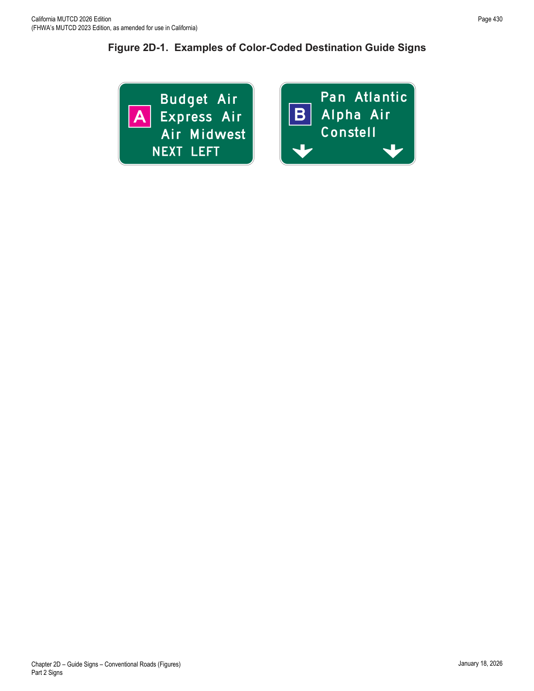
2D.03 Size of Signs
- 01Except as provided in Section 2A.07, the minimum sizes of conventional road guide signs that have standardized designs shall be as shown in Table 2D-1 and Table 2D-1(CA).
- 02Section 2A.07 explains the applicability of the various columns in Table 2D-1 and Table 2D-1(CA).
- 03Signs larger than shown in Table 2D-1 and Table 2D-1(CA) may be used (Section 2A.07).
- 04For other guide signs, the legends are so variable that a standardized design or size is not appropriate; sign size is determined primarily by message length and the letter/spacing needed for legibility.
- 05Reduced letter height, reduced interline spacing, and reduced edge spacing may be used on guide signs if sign size must be limited by factors such as lane width or vertical/lateral clearance.
- 06Reduced spacing between letters or words should not be used merely to reduce overall guide sign size, except where engineering judgment determines it is necessary for unusual lateral-space constraints — in which case legibility distance should be the primary consideration in deciding whether to reduce spacing or letter height.
- 07When a reduction in prescribed size is necessary, the design used should be as similar as possible to the standard-size design.
- 08Sign design details are provided in the "Standard Highway Signs" publication (FHWA) and Caltrans' California Sign Specifications (Section 1A.05).
2D.04 Lettering Style
- 01The design of upper-case letters, lower-case letters, numerals, route shields, and spacing shall be as provided in the "Standard Highway Signs" publication and Caltrans' California Sign Specifications.
- 02Lettering for names of places, streets, and highways on conventional road guide signs shall combine lower-case letters with initial upper-case letters (Section 2A.08). The nominal loop height of lower-case letters shall be ¾ the height of the initial upper-case letter; when a mixed-case legend height is specified only by the initial upper-case letter, the lower-case height is determined by this proportion (and vice versa).
- 03All other word legends on conventional road guide signs shall be in upper-case letters.
- 04The unique letter forms of each Standard Alphabet series shall not be stretched, compressed, warped, or otherwise manipulated. Modifications to word length for a given letter height and series shall be accomplished only by the methods in Section 2D.03.
2D.05 Size of Lettering
- 01Sign legibility is a direct function of letter size and spacing; legibility distance must be sufficient for road users to read and comprehend the sign despite inattention, blocked views, weather, or eyesight. Where conditions permit, repeating guide information on successive signs gives road users more than one opportunity to obtain it.
- 02Design layouts for conventional road guide signs — interline spacing, edge spacing, and other specification details — shall follow the "Standard Highway Signs" publication and Caltrans' California Sign Specifications.
- 03Except as otherwise provided, the principal legend on post-mounted guide signs shall be at least 6 inches in height for upper-case letters, or a combination of 6-inch upper-case with 4.5-inch nominal loop height lower-case letters. On low-volume roads and urban streets with speeds of 25 mph or less, the principal legend shall be at least 4-inch upper-case, or 4-inch upper-case combined with 3-inch nominal loop height lower-case.
- 04Except as otherwise provided, the principal legend on overhead guide signs shall be at least 6-inch upper-case, or 6-inch upper-case combined with 4.5-inch nominal loop height lower-case.
- 05Lettering sizes should be consistent on any particular class of highway.
- 06The minimum lettering and numeral sizes in this Manual (Table 2D-2) should be exceeded where conditions indicate a need for greater legibility.
2D.06 Amount of Legend
- 01The longer the legend on a guide sign, the longer it takes road users to recognize and comprehend it, regardless of letter size.
- 02Except where otherwise provided, guide signs should be limited to no more than three lines of destinations (place names, route numbers, street names, cardinal directions). Where two or more signs share the same overhead display, the amount of legend should be further minimized. Where appropriate, a distance message or action information (exit number, NEXT RIGHT, directional arrows) should be provided in addition to destinations.
2D.07 Abbreviations
- 01Commonly recognized abbreviations reduce reading time and improve comprehension — descriptors and directional/quadrant orientations such as Boulevard (Blvd), North (N), and Southwest (SW) are examples. Figure 2D-2 shows examples of abbreviation use.
- 02The words NORTH, SOUTH, EAST, and WEST shall not be abbreviated when indicating cardinal directions of numbered or named highways on guide signs.
- 03Abbreviations should be kept to a minimum but are useful when complete destination messages produce excessively long signs; if used, they should be unmistakably recognizable (Section 1D.08). Longer, commonly used street name descriptors not part of a proper name (Street, Boulevard, Avenue) should be abbreviated per Table 2D-3; shorter descriptors listed in Table 2D-4 should not be abbreviated.
- 04Periods, apostrophes, question marks, ampersands, or other non-letter/numeral/hyphen characters should not be used in abbreviations unless necessary to avoid confusion.
- 05The solidus (/) is intended for fractions only and should not separate words on the same legend line; use a hyphen instead, such as "TRUCKS – BUSES."
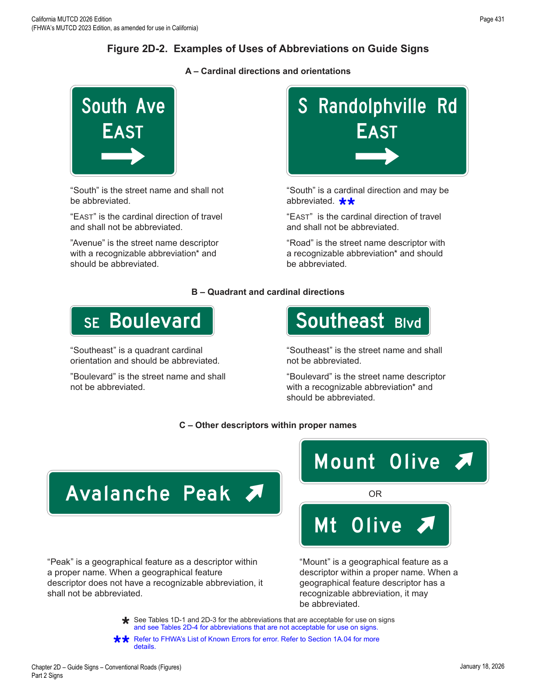
| Descriptor | Abbreviation | Descriptor | Abbreviation |
|---|---|---|---|
| Avenue | Ave | Northwest | NW* |
| Boulevard | Blvd | Parkway | Pkwy |
| Bypass | Byp | Place | Pl |
| Causeway | Cswy | Plaza | Plz |
| Circle | Cir | Road | Rd |
| Corner | Cor | Route | Rte |
| Court | Ct | South | S* |
| Crescent | Cres | Southeast | SE* |
| Drive | Dr | Southwest | SW* |
| East | E* | Square | Sq |
| Expressway | Expwy | Street | St |
| Extension | Ext | Terrace | Ter |
| Freeway | Fwy | Thruway | Thwy |
| Highway | Hwy | Trafficway | Trfwy |
| Lane | La, Ln | Trail | Tr |
| Landing | Lndg | Turnpike | Tpk |
| North | N* | West | W* |
| Northeast | NE* |
* For pre-directional or post-directional designations or cardinal orientations, such as E Main St or 3rd St SW.
| Descriptor | Descriptor |
|---|---|
| Alley | Oval |
| Belt | Pass |
| Beltway | Passage |
| Close | Path |
| Cove | Ridge |
| Edge | Row |
| Gate | Run |
| Green | Trace |
| Grove | Turn |
| Hill | View |
| Loop | Vista |
| Mews | Walk |
2D.08 Arrows
- 01Arrows are used for lane assignment and to indicate direction toward designated routes or destinations. Figure 2D-3 shows the standard arrow designs approved for guide signs; detailed drawings appear in the "Standard Highway Signs" publication.
- 02Except for Overhead Arrow-per-Lane signs (Section 2D.37), on overhead signs where a lane to be followed must be indicated, a down arrow shall be positioned over and point vertically downward toward the approximate center of that lane. Down arrows shall be used only on overhead guide signs restricting specific lanes to traffic bound for the indicated destination(s)/route(s), and only where an arrow can be located over each usable lane.
- 03More than one down arrow pointing to the same lane on a single overhead sign (or on multiple signs on the same structure) shall not be permitted.
- 04Where a roadway is leaving the through lanes, a directional arrow shall point upward at an angle approximating the alignment of the exit roadway near the departure point.
- 05The Type E directional arrow for circular intersections shall not be used on any sign not associated with a circular intersection.
- 06The Type A directional arrow should be used on guide signs on freeways, expressways, and conventional roads to indicate direction to a specific destination or group, except as otherwise provided (Section 2E.18).
- 07When a vertical, upward-pointing arrow is placed to the side of a group of destinations to indicate through movement, use Type A. When placed to the side of a single destination or under a destination/group, use Type B.
- 08Type B should be used on conventional road guide signs when placed at any angle to the side of a single destination, or horizontally to the side of a group.
- 09Type C advance turn directional arrow should be used on conventional road guide signs in advance of an intersection where a turn must be made to reach a posted destination.
- 10Type D should be used primarily for applications other than guide signs, except as provided in Paragraph 15.
- 11If Type E is used, the principles in Sections 2D.26 through 2D.29 should be followed.
- 12The Type A-Extended directional arrow may be used on guide signs where additional directional emphasis is needed relative to the sign's legend.
- 13Type C may be used to the side of an overhead guide sign's legend to accentuate a sharp turn exit maneuver (see Section 2E.25 for Exit Direction signs at low advisory ramp speeds).
- 14On conventional roads approaching an intersection where the Combination Lane-Use/Destination overhead sign (Section 2D.38) is not used, the Type C advance turn arrow may be used beneath an overhead sign's legend to show that a turn must be made from a mandatory movement lane to reach the destination(s) shown.
- 15Type D may be used on post-mounted conventional-road guide signs at lower operating speeds if the sign's text height is 8 inches or less; Type D arrows may also be used on a Street Name (D3-1 only) sign displaying two street names to indicate different travel directions for each street.
- 16Type E may be used on guide signs approaching circular intersections to represent intended driver paths involving left-turn movements around the circulatory island.
- 17The directional and down arrows shown in Figure 2D-3 may be used on signs other than guide signs to provide directional guidance and lane assignment.
- 18Arrows should be pointed at the appropriate angle to clearly convey the direction; a horizontally-oriented arrow should be used at right-angle intersections.
- 19On a post-mounted sign, an arrow for a straight-through movement should point upward; except as provided in Section 2D.50, an arrow for a turn should point horizontally or at an upward angle approximating the sharpness of the turn.
- 20At an exit, an arrow should be placed on the side of the sign that reinforces the exiting movement, using the directional arrow design.
- 21If used, the Type C advance turn directional arrow shall display a right or left arrow whose shaft is bent at a 90-degree or oblique angle.
- 22Arrows may be placed below the principal legend or on the side consistent with the direction of movement.
- 23On a post-mounted sign at an exit where placing the arrow far from the roadway would create an unusually wide sign limiting the road user's view of it, the arrow may instead be placed at the bottom, centered under the legend.
- 24The width across the arrowhead for Types A, B, and C should be between 1.5 and 1.75 times the upper-case letter height of the principal legend; for Type D, at least equal to that height; for down arrows on overhead signs, approximately 2 times that height.
- 25Section 2D.37 covers arrows for Overhead Arrow-per-Lane signs on conventional road approaches; Section 2D.41 covers arrows for Diagrammatic Advance guide signing at other intersections; Section 2D.39 covers diagrammatic arrows for Destination signs at circular intersections (Figure 2D-11).
- 26The "Standard Highway Signs" publication contains design details and standardized arrow sizes based on ranges of principal legend letter heights.
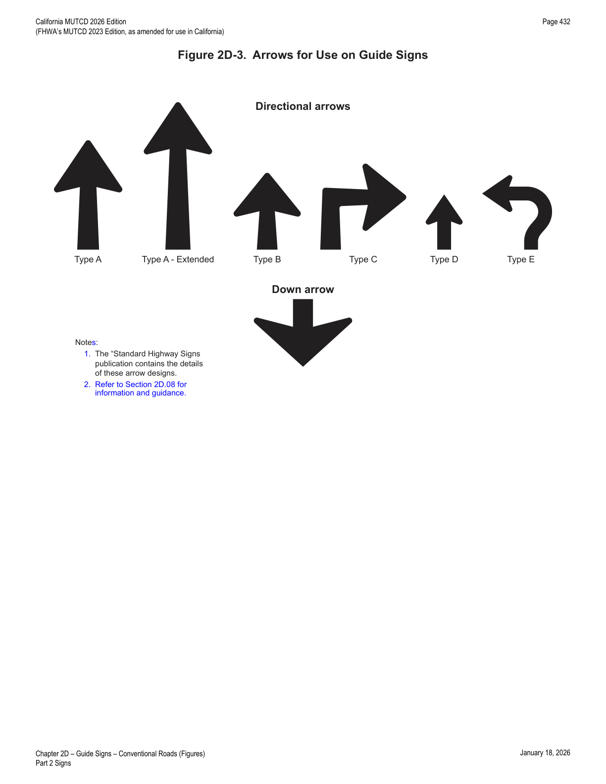
2D.09 Numbered Highway Systems
- 01The purpose of numbering and signing highway systems is to identify routes and facilitate travel.
- 02The Interstate and U.S. highway systems are numbered by AASHTO upon recommendations of the State highway organizations that own these systems; State and county road systems are numbered by the appropriate authorities.
- 03The basic policy for numbering the Interstate and U.S. systems is contained in AASHTO's published Purpose and Policy statements: (A) "Establishment and Development of United States Numbered Highways," and (B) "Establishment of a Marking System of the Routes Comprising the National System of Interstate and Defense Highways."
- 04These policy principles should be followed for the systems in Paragraph 3 and any other systems, with effective coordination between adjacent jurisdictions; avoid reusing numbers already assigned to Interstate, U.S., or State routes in the same area, and keep overlapping numbered routes to a minimum.
- 05Route systems shall be given preference in this order: Interstate, United States, State, and county. The preference shall be given by installing the highest-priority route number on the top or left of the sign, except as provided in Paragraph 7.
- 06Interstate route numbering shall be approved by the FHWA.
- 07The prioritization of route systems may be modified when a different order would better accommodate road user expectancy and provide more effective direction, such as separate decision points for routes encountered in a particular order.
- 08Section 2D.56 covers signing of unnumbered highways to enhance route guidance and facilitate travel.
- 09The California Legislature designates all State highway routes and assigns their route numbers; general route descriptions and numbers are in Chapter 2, Article 3, of the Streets and Highways Code (SHC), and these numbers are used for all administrative purposes.
2D.10 Route Signs and Auxiliary Plaques
- 01Except as provided in Paragraph 9 of Section 2D.29, all numbered highway routes shall be identified by route signs and auxiliary plaques.
- 02The signs for each system of numbered highways, distinctive in shape and color, shall be used only on that system and its approaches.
- 03Route signs and auxiliary plaques may be proportionally enlarged where greater conspicuity or legibility is needed.
- 04Route signs are typically mounted in assemblies with auxiliary plaques.
- 05Section 2D.57 covers signing for National Scenic Byways.
- 06Section 2D.58 covers signing for State-designated scenic byways, historic trails, and auto tour routes.
2D.11 Design of Route Signs
- 01The design of standard route signs shall conform to the "Standard Highway Signs" publication; the design of other route signs shall be established by the authority having jurisdiction and shall generally conform to that publication.
- 02Interstate Route (M1-1 Shield and M1-1a Marker) signs (Figure 2D-4) shall be used on all Interstate routes and with Route Sign assemblies on intersecting highways.
- 03Except as otherwise provided, a 24 x 24-inch minimum size shall be used for one- or two-digit Interstate route numbers, and 30 x 24-inch minimum for three-digit numbers.
- 04When the Interstate Route sign is used in a route sign assembly (Section 2D.29), the M1-1a (Marker) sign — State name in white upper-case on blue background — may be used in place of the M1-1 (Shield) sign.
- 05Use of the M1-1a (Marker) sign shall be limited to route sign assemblies.
- 06Off-Interstate Business Route (M1-2 and M1-3) signs (Figure 2D-4) shall consist of a cutout shield displaying the connecting Interstate route number and the words BUSINESS and either LOOP (route rejoins the same Interstate) or SPUR (route does not rejoin) in upper-case letters; legend and border shall be white on green, and the shield shall match the Interstate Route sign's shape and dimensions. The word INTERSTATE shall never appear on this sign.
- 07The Off-Interstate Business Route sign may be used on a major highway not part of the Interstate system that serves a city's business area from an interchange on the system.
- 08U.S. Route (Marker) signs (Figure 2D-4) shall consist of black numerals on a white shield surrounded by a rectangular black background without a border, used on all U.S. routes and with Route Sign assemblies on intersecting highways.
- 09A 24 x 24-inch minimum size shall be used for one- or two-digit U.S. route numbers, 30 x 24-inch minimum for three digits.
- 10State Route signs shall be designed by the individual State highway agencies.
- 11The legend on State Route signs shall conform to the Standard Alphabets in the "Standard Highway Signs" publication.
- 12aThe State Route (Marker) sign (G28-2(CA)) shall be used per the sizes in Table 2D-1(CA). The State Route (Shield) sign (G28-1(CA)) shall be used per the sizes in Caltrans' California Sign Specifications.
- 13Where U.S. Route signs are used as components of guide signs, only the distinctive shield shape and route numerals should be used — the rectangular black background (as on the M1-4 shield) shall not be included. Where used as components of other signs with non-contrasting background colors, the rectangular background shall be retained so the distinctive shield shape remains recognizable.
- 14If county road authorities establish a special system of important county roads, a statewide policy including a uniform numbering system shall be established. The County Route (M1-6) sign (Figure 2D-4) shall be a pentagon with a yellow county name, route number, and border on a blue background, minimum size 24 x 24 inches.
- 15If a jurisdiction uses letters instead of numbers to identify routes, all references to "numbered routes" in this Chapter shall be interpreted to also include lettered routes.
- 16If used with other route signs in common assemblies, the County Route sign should be of a compatible size.
- 17The National Forest Route (M1-7) sign (Figure 2D-4) design shall be as detailed in the "Standard Highway Signs" publication. Route signs for other park and forest roads shall be designed with an appropriate level of distinctiveness and adequate legibility, generally complying with route sign design principles and compatible in size with other route signs used in common assemblies.
- 18The State Route (Shield) sign is used on the face of guide signs; the State Route (Marker) sign is used for stand-alone assembly installations.
- 19For the U.S. Route (Shield) sign and both State Route (Shield and Marker) signs, refer to Figure 2D-4(CA).
- 20Standard details for State Route shields and markers are in Caltrans' California Sign Specifications.
In practice: California does not use the generic federal M1-5 State Route shield at all — Figure 2D-4 shows it struck through in the source, and Section 2D.11 directs agencies to the California-specific G28-1(CA) shield and G28-2(CA) marker instead (Figure 2D-4(CA), Table 2D-1(CA)).
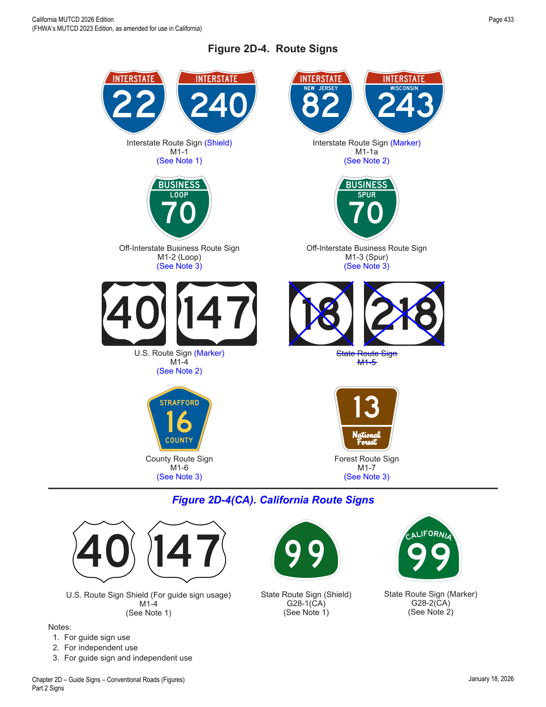
2D.12 Design of Route Sign Auxiliary Plaques
- 01Route sign auxiliary plaques displaying word legends, except the Junction (M2-1P) plaque, shall have a minimum standard size of 24 x 12 inches. The Junction plaque and plaques displaying arrows shall have a minimum standard size of 21 x 15 inches. All route sign auxiliary plaques shall match the color combination of the route sign they supplement.
- 02The background, legend, and border of a route sign auxiliary plaque should match the route sign's colors in a route sign assembly (Section 2D.29). For a multi-background-color design such as the Interstate Route sign, the plaque's background color should match the area on which the route number is placed.
- 03A route sign and any auxiliary plaques used with it may be combined on a single sign as a guide sign.
- 04If a route sign and its auxiliary plaques are combined into a single guide sign, the background shall be green and the design shall comply with basic guide sign design principles; auxiliary messages shall be white legends placed directly on the green background. Auxiliary plaques shall not be mounted directly to a guide sign or other type of sign.
- 05Chapter 2F covers auxiliary plaques for toll highways.
2D.13 Junction Auxiliary Plaque (M2-1P)
- 01The Junction (M2-1P) auxiliary plaque (Figure 2D-5) shall display the abbreviated legend JCT and be mounted at the top of an assembly (Section 2D.30) directly above the route sign, the alternative route sign (Section 2D.17) that is part of the route designation, or the Cardinal Direction auxiliary plaque where access is available only to one direction of the intersected route. Its minimum size shall be 21 x 15 inches for compatibility with arrow-displaying auxiliary plaques.
2D.14 Combination Junction Sign (M2-2)
- 01As an alternative to the standard Junction assembly where more than one route is intersected or joined, a rectangular guide sign may be used displaying the word JUNCTION above the route numbers.
- 02The Combination Junction (M2-2) sign (Figure 2D-5) shall have a green background with white border and lettering for the word JUNCTION.
- 03The Combination Junction sign should comply with Section 2D.11's provisions on incorporating route signs as components of guide signs.
- 04Although sign size depends on the number of routes involved, numerals should be large enough for clear legibility and comparable in size to those in the individual route signs.
2D.15 Cardinal Direction Auxiliary Plaques (M3-1P through M3-4P)
- 01Cardinal Direction auxiliary plaques (Figure 2D-5) displaying NORTH, EAST, SOUTH, or WEST should be used to indicate the general direction of the entire route.
- 02To improve readability and recognition, the first letter of the cardinal direction words shall be ten percent larger, rounded up to the nearest whole number size.
- 03If used, the Cardinal Direction plaque shall be mounted directly above a route sign or, if used, an alternative route auxiliary plaque.
- 04The Cardinal Direction plaque may be placed either above or to the right of the Route shield when used on the face of a guide sign.
- 05Refer to Section 2D.50 for application in a Freeway Entrance sign package.
2D.16 Alternative Route Auxiliary Plaques (M4-1P through M4-4P)
- 01Alternative Route auxiliary plaques (Figure 2D-5) displaying ALTERNATE, BY-PASS, BUSINESS, or TRUCK may indicate an alternate route of the same number between two points on that route.
- 02If used, Alternative Route auxiliary plaques shall be mounted directly above a route sign.
2D.17 ALTERNATE Auxiliary Plaques (M4-1P and M4-1aP)
- 01The ALTERNATE (M4-1P) or ALT (M4-1aP) auxiliary plaque (Figure 2D-5) may indicate an officially designated alternate routing of a numbered route between two points on that route.
- 02If used, it shall be mounted directly above a route sign.
- 03The M4-1P series plaques shall not be used to sign an alternative routing that is not officially designated and incorporated into the numbered highway system, such as incident management or emergency detour routings.
- 04The shorter (time or distance) or better-constructed route should retain the regular route number; the longer or worse-constructed route should be designated as the alternate route.
2D.18 BY-PASS Auxiliary Plaque (M4-2P)
- 01The BY-PASS (M4-2P) plaque (Figure 2D-5) may designate a route that branches from the numbered route through a city, bypasses part of the city or a congested area, and rejoins the numbered route beyond the city.
- 02If used, it shall be mounted directly above a route sign.
2D.19 BUSINESS Auxiliary Plaque (M4-3P)
- 01The BUSINESS (M4-3P) plaque (Figure 2D-5) may designate an alternate route that branches from a numbered route, passes through the business portion of a city or unincorporated area, and rejoins the numbered route beyond that area.
- 02If used, it shall be mounted directly above a route sign.
- 03Refer to Chapter 20 of Caltrans' Highway Design Manual for guidance on establishing business routes.
2D.20 TRUCK Auxiliary Plaque (M4-4P)
- 01The TRUCK (M4-4P) plaque (Figure 2D-5) may designate an alternate route that branches from a numbered route, where it is desirable to encourage or require commercial vehicles to use the alternate route.
- 02If used, it shall be mounted directly above a route sign.
2D.21 TO Auxiliary Plaque (M4-5P)
- 01The TO (M4-5P) plaque (Figure 2D-5) may provide directional guidance to a particular road facility from other highways in the vicinity (Section 2D.34).
- 02If used, it shall be mounted directly above a route sign or an alternative route auxiliary plaque; if a Cardinal Direction plaque is also in the assembly, the TO plaque shall be mounted directly above it.
2D.22 END Auxiliary Plaque (M4-6P)
- 01The END (M4-6P) plaque (Figure 2D-5) should be used where the route being traveled ends, usually at a junction with another route.
- 02If used, it shall be mounted either directly above a route sign or above a sign for an alternative route that is part of the terminating route's designation.
2D.23 BEGIN Auxiliary Plaque (M4-14P)
- 01The BEGIN (M4-14P) plaque (Figure 2D-5) may be used where a route begins, usually at a junction with another route.
- 02If used, it shall be mounted at the top of the first Confirming assembly (Section 2D.33) for the beginning route.
- 03If a BEGIN plaque is included in the first Confirming assembly, a Cardinal Direction plaque should also be included.
- 04If a Cardinal Direction plaque is also included, the BEGIN plaque shall be mounted directly above it.
2D.24 TEMPORARY Auxiliary Plaques (M4-7P and M4-7aP)
- 01The TEMPORARY (M4-7P) or TEMP (M4-7aP) plaque (Figure 2D-5) may be used for an interim period to designate a highway section not planned as a permanent part of a numbered route, but that connects completed portions of that route.
- 02If used, it shall be mounted directly above the route sign, above a Cardinal Direction plaque, or above an alternate-route auxiliary plaque that is part of the route designation.
- 03TEMPORARY or TEMP plaques shall be promptly removed when the temporary route is abandoned.
2D.25 Temporary Detour Signs and Auxiliary Plaques
- 01Chapter 6F covers Temporary Detour signs and auxiliary plaques.
2D.26 Advance Turn Arrow Auxiliary Plaques (M5-1P, M5-2P, and M5-3P)
- 01If used, the Advance Turn Arrow auxiliary plaque (Figure 2D-6) shall be mounted directly below the route sign in Advance Route Turn assemblies, displaying a right or left arrow whose shaft is bent at a 90-degree angle (M5-1P) or an oblique angle (M5-2P).
- 02If used, the Circular Intersection Advance Turn Arrow (M5-3P) plaque (Figure 2D-6) shall be used only on the approach to a circular intersection to depict a movement along the circulatory roadway around the central island and to the left, relative to the approach roadway and entry into the intersection.
- 03If the M5-3P plaque is used, this arrow type should also be used consistently on any regulatory lane-use signs (Chapter 2B), Destination signs (Section 2D.36), and pavement markings (Part 3) for that destination or movement.
- 04The Advance Turn (G22(CA)) sign (Figure 2D-6(CA)) may provide advance notice of a turnoff on expressways and high-speed two-lane roads.
- 05The G22(CA) sign should not be used on freeways; it should be installed on the right side of the roadway approximately 0.25 to 0.5 miles in advance of the turnoff.
- 06A Route shield and Cardinal Direction auxiliary plaque may be included on the G22(CA) sign in lieu of the destination.
2D.27 Lane Designation Auxiliary Plaques (M5-4P, M5-5P, and M5-6P)
- 01A Lane Designation (M5-4P, M5-5P, or M5-6P) auxiliary plaque (Figure 2D-6) may be mounted directly below the route sign in an Advance Route Turn assembly on multi-lane roadways, letting road users move into the appropriate lane before reaching the intersection or interchange.
- 02If used, Lane Designation plaques shall be used only where the designated lane is a mandatory movement lane and shall be located adjacent to the full-width portion of that lane. They shall not be installed adjacent to a through lane in advance of, or along the taper for, a lane being added.
2D.28 Directional Arrow Auxiliary Plaques (M6 Series)
- 01If used, the Directional Arrow auxiliary plaque (Figure 2D-6) shall be mounted below the route sign and any other auxiliary plaques in Directional assemblies (Section 2D.32), displaying a single- or double-headed arrow pointing in the general direction the route follows.
- 02A Directional Arrow plaque displaying a double-headed arrow shall not be mounted in any Directional assembly in advance of or at a circular intersection.
- 03The diagonal downward-pointing arrow auxiliary (M6-2aP) plaque may be used in a Directional assembly at the far corner of an intersection to indicate the immediate entry point to a freeway or expressway entrance ramp (Section 2D.50).
- 04The M6-2aP plaque shall not be used on the approach to, or on the near side of, an intersection, such as to designate an approach lane.
- 05The Directional Arrow auxiliary (G33-1P(CA)) plaque (Figure 2D-6(CA)) may be used in lieu of the Directional Arrow auxiliary (M6 series) signs.
- 06The G33-1P(CA) plaque reduces the overall height of the sign assembly when combined with other signs, such as general service, recreational, or cultural interest signs, particularly where installations are adjacent to pedestrian facilities.
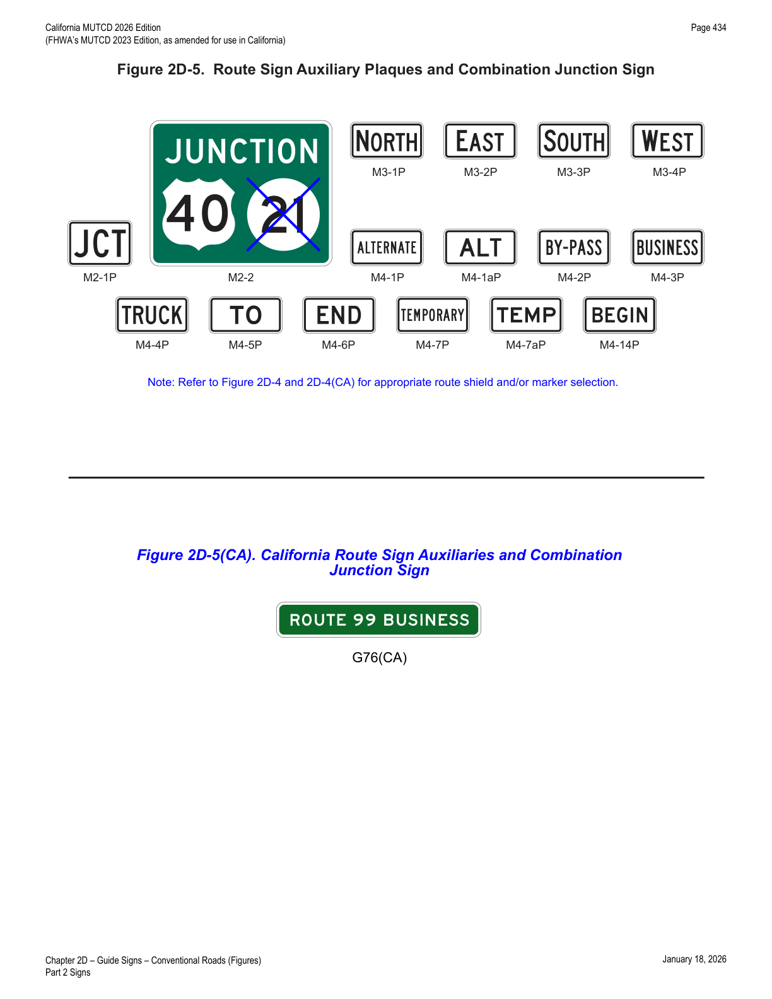
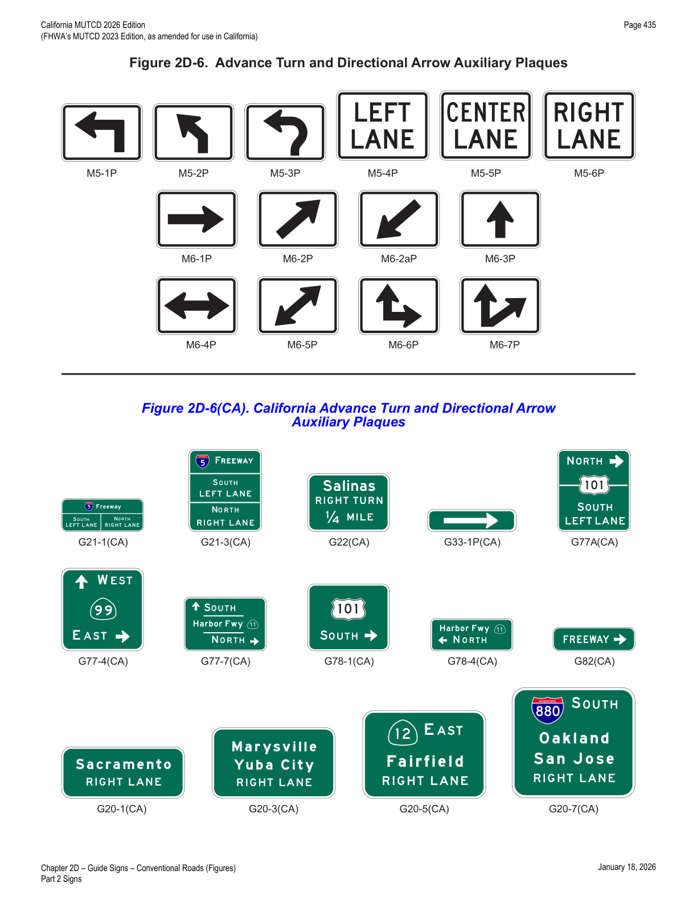
2D.29 Route Sign Assemblies
- 01A Route Sign assembly shall consist of a route sign and auxiliary plaques that further identify the route and indicate direction. Except as provided in Paragraph 9, Route Sign assemblies shall be installed on all approaches to numbered routes that intersect with other numbered routes.
- 02Where two or more routes follow the same section of highway, route signs for Interstate, U.S., State, and county routes shall be mounted in that order from the left in horizontal arrangements and from the top in vertical arrangements; subject to this precedence, lower-numbered routes shall be placed at the left or top.
- 03Within groups of assemblies, information for routes intersecting from the left shall be mounted at the left (horizontal) or top/center (vertical); from the right at the right/bottom; and straight-through routes at the center (horizontal) or top (vertical).
- 04Route Sign assemblies shall be mounted per the general specifications for signs (Chapter 2A), with the lowest sign in the assembly at the height prescribed for single signs.
- 05Assemblies for two or more routes, or for different directions on the same route, should be mounted in groups on a common support.
- 06Where more than four route signs would be needed in a single Advance Route Turn or Directional assembly, the route signs should instead be mounted in a guide sign to minimize repeating the same information on multiple Cardinal Direction and Directional Arrow plaques (Figure 2D-7).
- 07Route Sign assemblies may be installed on approaches to numbered routes on unnumbered roads and streets that carry an appreciable amount of traffic destined for the numbered route.
- 08If engineering judgment indicates that groups of assemblies with overlapping routes or multiple turns might be confusing, route signs or auxiliary signs may be omitted or combined provided clear direction is still given.
- 09Route Sign assemblies may be omitted for routes that are part of an agency's internal numbering system (e.g., maintenance) that are not publicly mapped or intended for navigational use, and for numbered routes not maintained during certain times of year (e.g., not plowed in winter).
- 10Figure 2D-8 shows typical placements of route signs.
- 11On freeways, Route Sign (Marker) shall be installed beyond the end of the acceleration lane at all entrances to freeway-to-freeway interchanges, and at intermediate locations spaced 3 to 5 miles apart.
- 12On conventional highways, Route Sign (Marker) should be installed at important urban and rural intersections, and at intermediate locations spaced 3 to 5 miles apart in rural areas.
- 13The Off-Interstate Business Loop (M1-2) (Marker) should not be placed on the interstate route itself.
2D.30 Junction Assembly
- 01A Junction assembly shall consist of a Junction auxiliary plaque (Section 2D.13) and a route sign displaying the number of the intersected or joined route.
- 02The Junction assembly shall be installed in advance of every intersection where a numbered route is intersected or joined by another numbered route.
- 03In urban areas, the Junction assembly should be installed in the block preceding the intersection; where speeds are low, it should be installed no more than 300 feet in advance.
- 04In rural areas, the Junction assembly should be installed at least 400 feet in advance; the minimum distance between a Junction assembly and either a Destination sign or an Advance Route Turn assembly should be 200 feet.
- 05Where speeds are high, greater spacings should be used.
- 06Where two or more routes are to be indicated, a single Junction auxiliary plaque may be used for the assembly with all route signs grouped in a single mounting, or a Combination Junction (M2-2) sign (Section 2D.14) may be used.
2D.31 Advance Route Turn Assembly
- 01An Advance Route Turn assembly shall consist of a route sign, an Advance Turn Arrow or word message auxiliary plaque, and a Cardinal Direction auxiliary plaque if needed; it shall be installed in advance of an intersection where a turn must be made to remain on the indicated route.
- 02The Advance Route Turn assembly may be used to supplement the required Junction assembly in advance of intersecting routes.
- 03Where a multi-lane highway approaches an interchange or intersection with a numbered route, the Advance Route Turn assembly shall be used to give advance notice of the correct lane(s) for the turn.
- 04Lane Designation auxiliary plaques (Section 2D.27) may be used in Advance Route Turn assemblies in place of Advance Turn Arrow plaques where engineering judgment indicates specific lane information is needed, overhead signing is impracticable, and the designated lane is a mandatory movement lane; such an assembly may supplement or substitute for one with Advance Turn Arrow plaques.
- 05In low-speed areas, the Advance Route Turn assembly should be installed not less than 200 feet in advance of the turn; in high-speed areas, not less than 300 feet. In rural areas, the minimum distance between an Advance Route Turn assembly and either a Destination sign or a Junction assembly should be 200 feet.
- 06An assembly that includes an Advance Turn Arrow auxiliary plaque shall not be placed where there is an intersection between it and the designated turn.
- 07Sufficient distance should be allowed between the assembly and any preceding intersection that could be mistaken for the indicated turn.
- 08The Advance Lane Assignment (G20(CA) or G21(CA) series) or Interchange Guide (G77(CA) or G78(CA) series) signs (Figure 2D-6(CA)) shall be used on multilane cross streets approaching a freeway interchange to indicate the proper lane for the desired freeway entrance; the principal message shall be route and cardinal direction.
- 09The names of major or control cities should be included in the G20(CA) and G21(CA) series signs.
- 10The Interchange Guide (G77(CA) series) sign should be used on two-lane cross streets at interchange areas to direct motorists from the cross street to the freeway ramp entrances.
- 11The G77(CA) series sign may also be used at an exit ramp split.
- 12The Interchange Guide (G78(CA) series) signs (Figure 2D-6(CA)) may direct motorists to a single cardinal direction or destination.
- 13The G78(CA) series signs are ordinarily used as a follow-up to the G77(CA) series sign.
- 14The FREEWAY with Arrow (G82(CA)) sign (Figure 2D-6(CA)) may direct motorists to a freeway from a business route or from a community served by a single freeway; it is formatted with the word FREEWAY and a vertical, diagonal, or horizontal arrow on either side of the message.
- 16The G82(CA) sign may be placed at appropriate locations to guide traffic to the freeway.
2D.32 Directional Assembly
- 01A Directional assembly shall consist of a Cardinal Direction auxiliary plaque (if needed), a route sign, and a Directional Arrow auxiliary plaque, used as follows: (A) turn movements (indicated in advance by an Advance Route Turn assembly) shall be marked by a Directional assembly with a route sign for the turning route and a single-headed arrow pointing in the turn direction; the beginning of a route (indicated in advance by a Junction assembly) shall be marked by a Directional assembly with a route sign for that route and a single-headed arrow pointing in the route's direction. (B) An intersected route (indicated in advance by a Junction assembly) on a crossroad designated on both legs shall be marked by either: (1) two Directional assemblies, each with a route sign, a Cardinal Direction plaque, and a single-headed arrow pointing in the direction of movement on that route; or (2) one Directional assembly with a route sign and a double-headed arrow pointing at appropriate angles left, right, or ahead. (C) An intersected route on a side road, or on a crossroad designated on only one leg, shall be marked by a Directional assembly with a route sign, a Cardinal Direction plaque, and a single-headed arrow pointing in the direction of movement on that route.
- 02Straight-through movements should be indicated by a Directional assembly with a route sign for the continuing route and a vertical arrow. A Directional assembly should not be used for a straight-through movement absent other assemblies indicating right or left turns, since the Confirming assembly beyond the intersection normally provides adequate guidance.
- 03Directional assemblies should be located on the near right corner of the intersection. At major, Y, or offset intersections, additional Directional assemblies should be installed on the far right or left corner to confirm the near-side assemblies. When the near-corner position is impractical, the far right corner should be preferred, with oversized signs if necessary for legibility. Where unusual conditions exist, location should be determined by engineering judgment to provide the best combination of view and safety.
- 04It is more important that guide signs be readable and their information/direction readily understood at the appropriate time and place than to be located with absolute uniformity.
- 05Figure 2D-8 shows typical placements of Directional assemblies.
2D.33 Confirming or Reassurance Assemblies
- 01If used, Confirming or Reassurance assemblies shall consist of a Cardinal Direction auxiliary plaque and a route sign; where the assembly is for an alternative route, the appropriate alternative-route auxiliary plaque (Section 2D.16) shall also be included.
- 02A Confirming assembly should be installed just beyond intersections of numbered routes, placed 25 to 200 feet beyond the far shoulder or curb line of the intersected highway.
- 03If used, Reassurance assemblies should be installed between intersections in urban areas as needed, and beyond the built-up area of any incorporated city or town.
- 04Route signs for confirming or reassurance purposes should be spaced at intervals necessary to keep road users informed of their route.
2D.34 Trailblazer Assembly
- 01Trailblazer assemblies provide directional guidance to a particular road facility from other highways in the vicinity, installed at strategic locations to indicate the direction to the nearest or most convenient point of access. The word TO indicates that the road where the sign is posted is not part of the indicated route, and the road user is merely being directed progressively to the route.
- 02A Trailblazer assembly shall consist of a TO auxiliary plaque (Section 2D.21), a route sign for a numbered or named highway (Section 2D.56) or an identification sign for a byway, historic trail, or auto tour route (Sections 2D.57, 2D.58), and a single-headed Directional Arrow auxiliary plaque pointing toward the route; where the assembly is for an alternative route, the appropriate alternative-route auxiliary plaque (Section 2D.16) shall also be included.
- 03A Cardinal Direction auxiliary plaque (Section 2D.15) may be used in a Trailblazer assembly where the direction leading to the route provides access only to one direction of travel for that route.
- 04The TO plaque, Cardinal Direction plaque, and Directional Arrow plaque should be the standard size for their respective type; the route sign should be the size given in Section 2D.11.
- 05Trailblazer assemblies may be installed with other Route Sign assemblies, or alone, in the immediate vicinity of the designated facilities.
- 06CVC § 21350 authorizes the State, with local authorities' consent, to place and maintain appropriate signs along city streets and county roads directing traffic to State highways.
- 07Cooperation with local authorities should be sought when placing a Trailblazer assembly.
- 08Permission shall be obtained from the appropriate local agency for all signs placed outside the State right-of-way.
- 09For all signs placed outside the State right-of-way, refer to Section 2A.101(CA).
- 10In metropolitan areas, a freeway name may be used only if it is well known, commonly used, and omitting it would cause confusion.
- 11The Trailblazer format shall include the appropriate route shield.
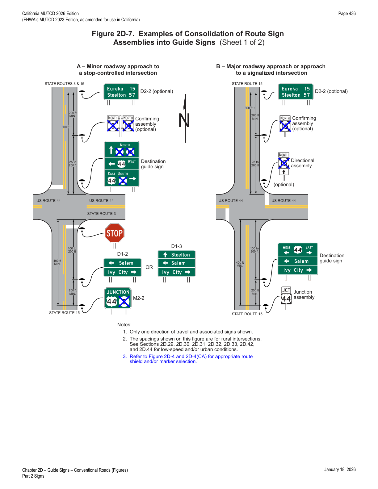
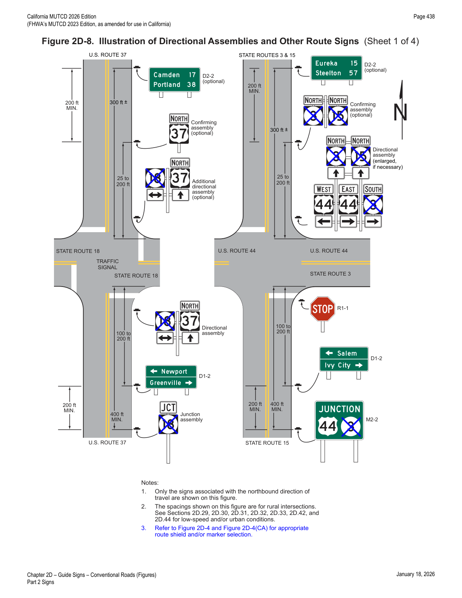
2D.35 Destination and Distance Signs
- 01In addition to guidance by route numbers, it is desirable to inform road users of destinations reachable by numbered or unnumbered routes; this is done through Destination signs and Distance signs.
- 01aFor California Destination and Distance signs (G1(CA) series, G8(CA) series, and G86(CA) series), refer to Figure 2D-9(CA).
- 02Route shields and cardinal directions may be included on the Destination sign with the destinations and arrows.
- 03If Route shields and cardinal directions are included, the shield height should be at least twice the upper-case letter height of the principal legend and not less than 18 inches, and cardinal direction letter height should meet the minimum specified for these signs.
- 04If used, destination names on low-volume rural roads should be as specific and descriptive as possible — campgrounds, ranger stations, recreational areas should be clearly indicated so they are not mistaken for communities or locations with road user services.
2D.36 Destination Signs (D1 Series)
- 01Except on approaches to interchanges (Section 2D.49), Destination (D1-1 through D1-3) signs (Figure 2D-9), if used, shall be a horizontal rectangle displaying the name of a city, town, village, or other traffic generator, and a directional arrow.
- 02The distance to the place named may also be displayed on Destination (D1-1a through D1-3a) signs (Figure 2D-9). If several destinations share a single point, several names may be placed on one sign, each with its own arrow (and distance, if desired); if more than one destination lies in the same direction, a single arrow may serve that group.
- 03Adequate separation should be provided between destinations or groups of destinations in different directions, using suitable arrow design, line spacing, heavy separator lines across the sign, or separate signs.
- 04A horizontal separator line by direction can enhance readability by relating an arrow to its destination(s) and eliminating the need for multiple same-direction arrows and excessive line spacing.
- 05Except as otherwise provided, an arrow pointing right shall be at the extreme right of the sign, and an arrow pointing left or up shall be at the extreme left; distance numerals, if used, shall be placed to the right of the destination names.
- 06An arrow pointing up may be placed at the extreme right when the sign is mounted to the left of the traffic to which it applies.
- 07Unless a sloping arrow will convey a clearer indication of direction, directional arrows should be horizontal or vertical.
- 08If several individual name signs are assembled into a group, all signs in the assembly should be the same horizontal width.
- 09Destination signs should be used: (A) at intersections of U.S. or State numbered routes with Interstate, U.S., or State numbered routes; and (B) at points where they direct traffic from U.S. or State numbered routes to town business sections or to other destinations reached by unnumbered routes.
- 10Where three or fewer destinations are displayed on the Advance guide (Section 2E.23) and Supplemental guide (Section 2E.51) signs, no more than three destination names shall be displayed on a Destination sign; where four destinations are displayed on those signs, no more than four names shall be displayed on a Destination sign.
- 11If space permits, four destinations should be displayed on two separate signs at two separate locations.
- 12Where space does not permit, or all four destinations are in one direction, a single sign may be used; where all destinations are in the same direction, the arrow may be placed below the destinations to enhance its conspicuity.
- 13Where a single four-name sign assembly is used, a heavy line approximating the width of the sign border entirely across the sign, or separate signs, shall be used to separate destinations by direction.
- 14The closest destination lying straight ahead should be at the top, with the closest destinations to the left and right below it in that order. Each direction should ordinarily display the next county seat or principal city rather than a more distant destination; for overlapping routes, only one destination should be displayed per direction per route.
- 15If more than one destination is displayed in the same direction, the nearer destination's name shall be displayed above the name of the destination farther away.
- 16Overhead destination guide signs are sometimes helpful on multi-lane conventional roadways with complex or unusual alignments/geometrics at intersecting highways, to provide positive direction and lane assignment.
- 17Overhead Destination signs may provide lane assignment and destination information for some or all lanes on the approach to a multi-lane intersection, including cardinal directions, route numbers, street names, and/or place names.
- 18Overhead signs using the Arrow-per-Lane configuration (Figure 2D-10) may be used to assign lanes for some or all lane destinations at a multi-lane intersection approach (Section 2D.37).
- 19Refer to Section 2E.07 for Designation of Destinations and control cities.
- 20If there are more eligible destinations at a given intersection than can be accommodated under this Section's limitations, they shall compete for signs on the basis of traffic volumes to those destinations.
- 21Destinations should be signed by the route requiring the least travel time from the nearest State highway.
- 22Criteria for supplemental destination signs shall be as shown in Table 2D-101(CA).
- 23Signs shall not be provided for privately owned, profit-making enterprises regardless of size.
- 24If unusual operational or safety issues could be mitigated by signing to a private enterprise, such signs on State highways may be used with the approval of the Caltrans District Director.
- 25Signs to shopping centers shall not be allowed.
- 26When a street or facility name change is made on an existing State highway sign primarily for the requestor's benefit, with no or only minor traffic-flow improvement, the requestor shall pay the costs of materials and labor plus the current administrative overhead rate determined by the Accounting Service Center; such changes require Caltrans District Director approval.
- 27Street name changes on State highway signs that are clearly in the best interest of motorists and the State may also be approved by the Caltrans District Director.
- 28New signs, if warranted, shall be installed at State expense.
- 29Signs to a public or nonprofit facility may be installed and maintained on conventional State highways in a "city street" configuration by local governmental bodies under an encroachment permit.
- 31The Veterans National Cemetery (G86-14(CA)) or Veterans Home of California (G86-16(CA)) signs may be placed, one in each direction of travel, on the nearest State highway based on a request from the Federal Department of Veterans Affairs.
- 32Signs to City Civic Center areas may be installed on State highways for incorporated cities.
- 33The city shall be incorporated and contiguous with the State highway right-of-way.
- 34The city shall adopt a resolution requesting installation of signs on specific State highways guiding motorists to the city's civic center area (downtown, central business district, city center, or city hall); the resolution shall include the appropriate sign legend wording.
- 35The route from State highways to City Hall shall not be more than 3 miles.
- 36When requested by resolution, signs may be placed on all State highways within 3 miles of City Hall.
- 37Only one sign shall be installed in each direction of travel for each requesting State highway. If part of the route from a State highway to the Civic Center area is under another city's jurisdiction, both cities shall agree in writing that signs can be installed on the State highway.
- 38Trailblazer assemblies should be in place on local streets and roads prior to installation of signs on State highways.
- 39The legend may be "(city name) Civic Center," "Downtown (city name)," "(city name) Central Business District," "(city name) City Center," "(city name) City Hall," or a very similar message.
- 40Only one legend shall be selected and used on all corresponding State highways for a particular Civic Center area.
- 41Signs should be roadside signs; where possible they should be supplemental plaques mounted on existing roadside Supplemental Destination (G86(CA) series) signs and NEXT X EXITS (E9) signs.
- 42When this is not reasonable, signs may be separate roadside signs.
- 43Signs may be mounted overhead if there is no reasonable roadside alternative.
- 44The city shall have the signs installed under an encroachment permit and pay all fabrication/installation costs; Caltrans shall maintain these signs.
- 45Signs shall comply with this Manual and applicable Caltrans policies, specifications, and standards.
- 46SHC § 100.9 requires that appropriate directional signs be installed directing motorists to bypassed cities and business districts; this law requires that all signs, except Route shields, be left in place on the old highway regardless of its status as a business route.
- 47When relinquishing any bypassed highway, the city or county concerned should be advised regarding continued maintenance of such signs by local agencies.
- 48Indian Reservations and Rancherias shall be signed like cities and unincorporated communities for supplemental destination and miscellaneous guide signs; only the official name of the federally recognized Indian Tribe, Reservation, or Rancheria shall be used, and the signs shall be white with retroreflective legend and border on a green retroreflective background.
- 49Signs and sign messages shall conform to the California Outdoor Advertising Act, which prohibits advertising displays within the right-of-way of any State highway.
2D.37 Overhead Arrow-per-Lane Destination Guide Signs
- 01Overhead Arrow-per-Lane destination guide signs are sometimes used on multi-lane conventional roadways to provide positive direction to destinations and indicate lanes to be used, typically at complex or unusual roadway alignments/geometrics. Sheet 2 of Figure 2A-4 and Sheet 1 of Figure 2D-10 show examples on a conventional road. Unlike the Combined Lane-Use/Destination (D15-1) sign (Section 2D.38), Overhead Arrow-per-Lane signs can be used where the designated lane is not a mandatory movement lane.
- 02At complex intersection approaches involving multiple lanes and destinations, an Overhead Arrow-per-Lane sign may provide destination information for some or all lanes, including cardinal direction, route numbers, street names, and/or place names.
- 03Overhead Arrow-per-Lane signs for conventional roads shall only be used for multi-lane approaches to intersections that have an option lane.
- 04Overhead Arrow-per-Lane guide signs on conventional roads shall include, at minimum, one arrow above each mandatory turn lane and a bifurcated arrow for the option lane from which both through and turning movements are allowed.
- 05Displaying an arrow over each through-movement lane that does not allow turning should be considered for additional positive guidance.
- 06Overhead Arrow-per-Lane signs for conventional roads shall be designed so that: (A) the shaft of each arrow is located over the approximate center of the lane to which it applies; (B) arrows for continuing through lanes are vertically upward-pointing (Figure 2D-10); (C) the arrow for a lane that must turn is curved in the turn direction and accompanied by a black-on-yellow ONLY (E11-1b) sign panel (Figure 2E-17) adjacent to the lower end of the arrow shaft; (D) the arrow for an optional exit lane that also carries the through route has a single shaft that bifurcates into a vertically upward-pointing arrow and a curving arrow matching the through/turn lane configuration; (E) a vertical white line separates the route shields and destinations for the two diverging movements; and (F) the number of lanes displayed corresponds to the number of lanes signed for at that sign's location — an advance sign shall not depict lanes added downstream.
- 07Overhead Arrow-per-Lane guide signs should also: (A) display no more than one destination per movement, and no more than three destinations per sign; (B) position the arrowhead(s) for the diverging movement lower on the sign than the arrowhead(s) for the through movement; (C) position route shields, cardinal directions, and destinations so they are clearly related to the arrowhead(s) for the movement to which they apply; and (D) keep the vertical white line separating diverging movements from descending below the top of the through-lane arrowheads, positioned approximately halfway between the diverging arrowheads for the optional movement lane.
- 08Destination information should be kept to the minimum necessary to provide positive guidance without overloading the road user.
- 09The minimum height of arrows on an Overhead Arrow-per-Lane sign for a conventional road shall be as shown in Table 2D-5.
- 10When letter heights and other sign legend elements are enlarged, there should be a corresponding increase in arrow size.
- 11Curved-stem arrows may be substituted on Overhead Arrow-per-Lane signs at multi-lane approaches to a circular intersection with an option lane (Section 2D.39).
| Principal Legend Letter Height | Straight Arrow | Turn Arrow |
|---|---|---|
| 10.67 – 13.33 | 32 | 24 |
| 8 | 24 | 18 |
2D.38 Combination Lane-Use/Destination Overhead Guide Sign (D15-1)
- 01At intersection approaches involving multiple turn lanes and destinations, a Combination Lane-Use/Destination (D15-1) overhead guide sign (Figure 2D-9) combining a lane-use regulatory sign with destination information (cardinal direction, route number, street name, and/or place name) may be used.
- 02At such locations, the combined D15-1 information can be even more effective than separate lane-use and guide signs for conveying to unfamiliar drivers which lane(s) to use for a particular destination.
- 03Figure 2D-9 shows a D15-1 sign combining lane-use and street name information, and one combining lane-use, cardinal direction, and route number information.
- 04The D15-1 sign shall be used only where the designated lane is a mandatory movement lane; it shall not be used for lanes with optional movements.
- 05The D15-1 sign shall have a green background with a white border. As shown in Figure 2D-9, the lane-use sign (Chapter 2B) shall be placed near the bottom of the sign and the destination information near the top; the sign shall be located over the approximate center of the lane to which it applies.
2D.39 Destination Signs at Circular Intersections
- 01Destination signs used at circular intersections shall comply with Section 2D.36, except as provided in this Section.
- 02Exit Destination (D1-1d and D1-1e) signs (Figure 2D-11) with diagonal upward-pointing arrows, or Directional assemblies (Section 2D.32), may be used to designate a particular exit from a circular intersection.
- 03Destination (D1-2d and D1-3d) signs (Figure 2D-11) with curved-stem arrows may be used on approaches to circular intersections to represent left-turn movements.
- 04Curved-stem arrows on circular intersection destination signs may point diagonally to depict an exit's location relative to the approach roadway and entry into the intersection.
- 05An Overhead Arrow-per-Lane Destination sign (Section 2D.37) with curved-stem arrows may be used on multi-lane approaches to circular intersections that have an option lane.
- 06A Destination (D1-5 or D1-5a) sign (Figure 2D-11) with a diagram of the circular intersection may be used on approaches to circular intersections.
- 07If curved-stem arrows are used on destination signs, this arrow type should also be used consistently on any regulatory lane-use signs (Chapter 2B), Directional assemblies (Section 2D.32), and pavement markings (Part 3) for that destination or movement.
- 08Figure 2D-12 shows examples of guide signing for circular intersections.
- 09Circular Intersection Diagrammatic (D1-5 or D1-5a) signs might be preferable where space is available and the geometry is non-typical — more than four legs, or legs not at approximately 90-degree angles — in which case minimizing legend per destination and aligning arrows with roadway geometry aids navigation.
- 10If used, Circular Intersection Diagrammatic signs shall not depict the number of lanes within the circulatory roadway, or on its approaches or exits, through lane lines, multiple arrow shafts for the same movement, or other methods.
- 11Chapter 2B covers regulatory signs at circular intersections, Chapter 2C covers warning signs, and Chapter 3D covers pavement markings at circular intersections.
2D.40 Destination Signs at Jughandles
- 01Destination signs used at jughandles shall comply with Section 2D.36.
- 02Section 2B.35 covers regulatory signs for jughandle turns; Figure 2B-9 shows examples of regulatory and destination guide signing for various jughandle turn types.
2D.41 Destination Signs at Intersections with Indirect Turning Movements
- 01A system of guide signs along with associated lane markings should be used to direct traffic through intersections with indirect turning movements.
- 02Figure 2D-13 shows examples of destination guide signing for intersections with indirect turning movements.
2D.42 Location of Destination Signs
- 01In high-speed areas, Destination signs should be located 200 feet or more in advance of the intersection, following any required Junction or Advance Route Turn assemblies. In rural areas, the minimum distance between a Destination sign and either an Advance Route Turn assembly or Junction assembly should be 200 feet.
- 02In urban areas, shorter advance distances than those in Paragraph 1 may be used.
- 03Because the Destination sign is of lesser importance than the Junction, Advance Route Turn, or Directional assemblies, it may be eliminated where the distance available for adequate sign spacing is limited.
- 04Figure 2D-8 shows typical placements of Destination signs.
2D.43 Distance Signs (D2 Series)
- 01If used, Distance (D2-1 through D2-3) signs (Figure 2D-9) shall be a horizontal rectangle of a size appropriate for the required legend, displaying the names of no more than three cities, towns, junctions, or other traffic generators, and the distance (to the nearest mile) to those places.
- 02The distance numerals shall be placed to the right of the destination names, as shown in Figure 2D-9.
- 03The displayed distance should be selected case-by-case by the owning jurisdiction or by statewide policy, using a well-defined central area or central business district where one exists, or otherwise the point where most drivers would feel they are at the center of the community.
- 04The top name on the Distance sign should be the next place on the route with a post office or railroad station, an intersected highway's route number or name, or another significant geographical identity; the bottom name should be the next major destination or control city. If three destinations are displayed, the middle line should indicate communities of general interest or important route junctions.
- 05The choice of names for the middle line may vary on successive Distance signs to give road users additional information about communities served by the route.
- 06The control city should remain the same on all successive Distance signs throughout the route until that city is reached.
- 07If more than one distant point may properly be designated — such as where the route divides ahead to serve two destinations of similar importance and both cannot appear on the same sign — the two names may be alternated on successive signs.
- 08On a route continuing into another State, destinations in the adjacent State should be displayed.
- 09Refer to Section 2E.07 for Designation of Destinations and control cities.
2D.44 Location of Distance Signs
- 01If used, Distance signs should be installed on important routes leaving municipalities, just beyond intersections of numbered routes in rural areas, and just outside municipal limits (or the built-up area edge if it extends beyond the limits).
- 02Where overlapping routes separate a short distance from the municipal limits, the Distance sign at the municipal limits should be omitted, and installed approximately 300 feet beyond the separation of the two routes instead.
- 03Where, just outside an incorporated municipality, two routes are concurrent and continue concurrently to the next incorporated municipality, the top name on the Distance sign should be the place where the routes separate, and the bottom name should be the city to which most through traffic is destined.
- 05The Distance (G5(CA)) sign should be placed at approximately 10-mile intervals unless the destinations have changed; distances to the same destinations should not be displayed more often than every 5 miles.
- 06The Destination and Street Name with Arrow (G8(CA) series) signs may be used in advance of intersections on conventional highways.
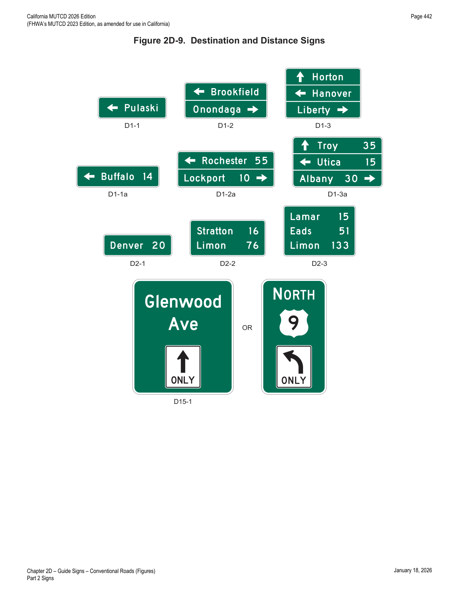
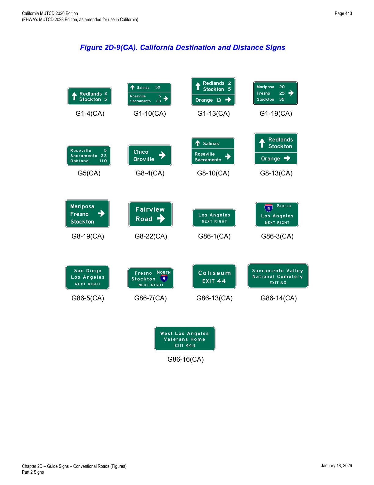
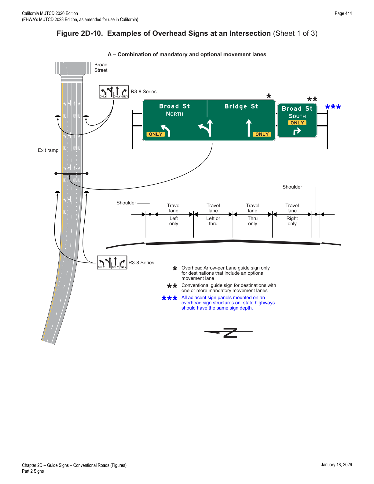
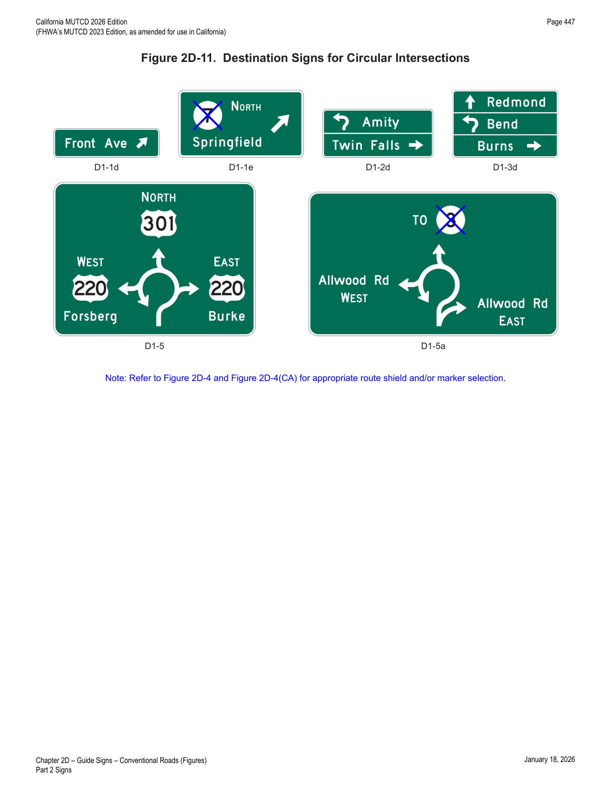
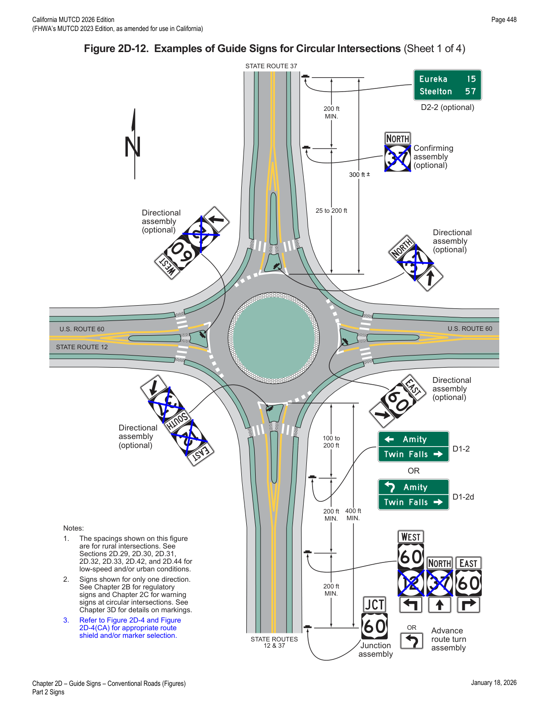
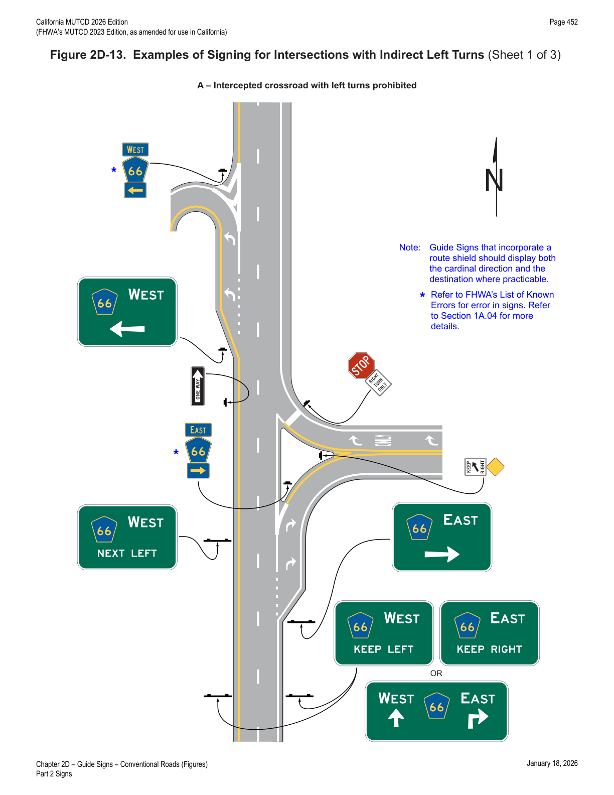
2D.45 Street Name Signs (D3-1 and D3-1a)
- 01Street Name signs at intersections and along roadways provide road users with important navigation information. Section 2H.10 covers signs identifying the names of grade-separated streets, railways, bikeways, or other transportation facilities.
- 02Street Name (D3-1 or D3-1a) signs (Figure 2D-14) should be installed in urban areas at all street intersections regardless of other route signs present, and in rural areas to identify important roads not otherwise signed.
- 03To minimize wrong-way movements onto freeway or expressway exit ramps, Street Name signs should not be used at the intersection of a freeway/expressway exit ramp with the crossroad to display the freeway/expressway name to crossroad traffic.
- 04For streets that are part of a U.S., State, or county numbered route, a D3-1a Street Name sign (Figure 2D-14) incorporating a route shield may be used to help road users associate the street name with the route number.
- 05Lettering for names of streets and highways on Street Name signs shall combine lower-case letters with initial upper-case letters (Section 2A.08).
- 06Letter heights for Street Name signs should be based on: (A) use of Advance Street Name signs (Section 2D.46); (B) number of lanes on the intersection approach; (C) length of turn lanes; and (D) distance the Street Name sign is located across the intersection (if none is provided on the near side).
- 07Letter heights on street name signs should be as shown in Table 2D-6.
- 08For two-lane local roadways with speed limits of 25 mph or less, lettering on post-mounted Street Name signs may use initial upper-case letters at least 4 inches high and lower-case letters at least 3 inches in nominal loop height.
- 10A minimum upper-case letter height of 12 inches with a 9-inch lower-case nominal loop height is recommended for all overhead Street Name signs regardless of posted speed limit, since Street Name signs generally require greater legibility distances for road users to react properly.
- 11Each Street Name sign in a sign assembly may use different letter heights determined by the speed limit of the street each sign faces.
- 12The letter height of the street name descriptor (St, Ave, Rd), directional legend (NW), or other supplemental legend (block/house numbers) on D3-1 and D3-1a signs may be smaller than that of the street name itself.
- 13Such supplemental legend height should be at least two-thirds of the street name's letter height, but not less than 3 inches for initial upper-case letters and not less than 2.25 inches for lower-case nominal loop height.
- 14Conventional abbreviations (Section 1D.08) should be used except for the street name itself; acceptable abbreviations for street name descriptors follow Table 2D-3 (Section 2D.07), and the descriptors in Table 2D-4 should not be abbreviated.
- 15Block or house numbers may be displayed as a supplemental legend on a Street Name sign to aid emergency responders and road users in locating addresses.
- 16If block/house numbers are displayed where only a single Street Name sign is provided for the crossroad, the left and right block numbers should be positioned at the left and right sides of the sign, respectively.
- 17If two Street Name signs are provided for the crossroad (e.g., diagonally opposite corners), each sign should display only the block/house numbers for that block of the crossroad.
- 18A pictograph representing the municipality (Section 2A.04) may be used on a D3-1 sign. For street networks under the primary jurisdiction of another governmental-approved entity (college/university campus, military base, airport, port), a pictograph representing that entity may be used on a D3-1 sign within its jurisdictional boundaries.
- 19Pictographs shall not be displayed on D3-1a or Advance Street Name (D3-2) signs (Section 2D.46).
- 20If a pictograph is used on a D3-1 sign, its height and width shall not exceed the upper-case letter height of the principal legend.
- 21The pictograph should be positioned to the left of the street name.
- 22Pictographs should not be used on a D3-1 sign that contains directional arrows.
- 23The Street Name sign shall be retroreflective or illuminated per Section 2A.21.
- 24The border may be omitted from a post-mounted Street Name sign.
- 25The decision to omit the border should be based on factors such as the visual complexity of the environment and the degree of conspicuity needed for adequate sign recognition.
- 26An alternative background color (Paragraph 28) other than standard green may be used for Street Name (D3-1 or D3-1a) signs where the highway agency determines it necessary to help road users determine jurisdictional authority for roads.
- 27Alternative background colors shall not be used for Advance Street Name (D3-2) signs.
- 28The only acceptable alternative background colors for Street Name (D3-1 or D3-1a) signs shall be blue, brown, or white; regardless of whether green, blue, or brown is used, the legend (and border, if used) shall be white, and for a white background, the legend (and border) shall be black.
- 29An alternative background color, if used, should be applied to Street Name (D3-1 or D3-1a) signs on all roadways under the jurisdiction of a particular highway agency.
- 30In business or commercial areas and on principal arterials, Street Name signs should be placed at least on diagonally opposite corners; in residential areas, at least one sign should be mounted at each intersection, with signs naming both streets installed at each intersection.
- 30aStreet Name signs shall be mounted with their faces parallel to the streets they name.
- 31Where used, Street Name signs should display their legends on both front and back sides to facilitate pedestrian navigation.
- 32To optimize visibility, Street Name signs may be mounted overhead, or placed above a regulatory, STOP, or YIELD sign with no required vertical separation.
- 33In urban or suburban areas, especially where Advance Street Name signs are not used for signalized and other major intersections, overhead Street Name signs should be strongly considered.
- 34At intersection crossroads where the same road has two different street names for each direction of travel, both names may be displayed on the same Street Name (D3-1) sign along with Type D directional arrows, except where an arrow would oppose the flow of traffic on a one-way street or a turn in the arrow's direction is not allowed.
- 35On lower-speed roadways, historic street name signs within locally identified historic districts meeting the criteria of 36 CFR 60.4 may remain in service without complying with Paragraphs 3, 4, 6, 9, 12 through 14, and 18 through 20.
- 36Streets or segments memorialized or dedicated should not use a second Street Name sign to display the memorial/dedication name (Section 2D.56); when signed, the Memorial or Dedication sign should be located to minimize its conspicuity and potential for confusion.
- 37Section 2C.65 covers use of street names on supplemental plaques for intersection-related warning signs.
- 38Section 2H.10 covers identification of overcrossing and undercrossing roadways at grade separations.
- 39Street Name signs shall be placed where clearly visible to traffic approaching from all directions at all signalized intersections (CVC § 21366).
- 40Where structurally adequate luminaire poles are available, street name signs may be mounted on these poles at a height of approximately 15 feet (Caltrans' Standard Plans).
2D.46 Advance Street Name Signs (D3-2 Series)
- 01Advance Street Name (D3-2) signs (Figure 2D-14) identify a downstream intersection — often the next intersection, but sometimes several intersections away where the next signalized intersection is referenced.
- 02Advance Street Name (D3-2) signs, if used, shall supplement rather than replace the Street Name (D3-1 or D3-1a) signs at the intersection.
- 03Advance Street Name signs may be installed in advance of signalized or unsignalized intersections to identify the intersecting street name(s), preparing road users for crossing traffic and facilitating timely deceleration and/or lane changing before a turn.
- 04On arterial highways in rural areas, Advance Street Name signs shall be used in advance of all signalized intersections and all intersections with mandatory turn lanes.
- 05In urban areas, Advance Street Name signs should be used in advance of all signalized intersections on major arterial streets, except where signalized intersections are so closely spaced that advance placement is impracticable.
- 06The heights of the letters on Advance Street Name signs should comply with Section 2D.05.
- 07If used, Advance Street Name signs shall have a white legend and border on a green background; alternative background colors shall not be used.
- 08If used, Advance Street Name signs shall provide the intersecting street name(s) on the top line(s) and the distance to the intersecting street(s), or a message such as NEXT SIGNAL, NEXT INTERSECTION, NEXT CIRCLE, or directional arrow(s), on the bottom line.
- 09Pictographs shall not be displayed on Advance Street Name signs.
- 10Directional arrow(s) may be placed to the right or left of the street name or message instead of on the bottom line; curved-stem arrows may be used on Advance Street Name signs approaching circular intersections.
- 11For intersecting crossroads where the same road has a different name for each direction of travel, the different names may be displayed on the same Advance Street Name sign with directional arrows.
- 12In advance of two closely spaced intersections where separate Advance Street Name signs are impracticable, one sign may include street names for both intersections along with supplemental legends (NEXT INTERSECTION, 2ND INTERSECTION, NEXT LEFT/NEXT RIGHT) or directional arrows.
- 13If two street names are used, they should be displayed as: (A) for a single intersection where the road has a different name each direction, the name of the street to the left above the name to the right; or (B) for two closely-spaced intersections, the first street encountered above the second, with the arrow for the second an advance arrow like that on the W16-6P plaque (Figure 2C-16).
- 14An Advance Street Name (W16-8P or W16-8aP) plaque (Section 2C.65) with black legend on yellow, supplementing an Intersection (W2 series) or Advance Traffic Control (W3 series) warning sign, may be used instead of an Advance Street Name guide sign.
- 15The Destination and Street Name with Arrow (G8(CA) series) signs may be used in advance of intersections on conventional highways.
2D.47 Parking Area Guide Sign (D4-1)
- 01The Parking Area (D4-1) guide sign (Figure 2D-14) may show the direction to a nearby public parking area or facility.
- 02The smaller size of 18 x 15 inches for the Parking Area guide sign shall be limited to minor, low-speed streets.
- 03If used, the Parking Area guide sign should be installed on major thoroughfares at the nearest point of access to the parking facility, where it can advise drivers of a place to park; it should not be used more than four blocks from the parking area.
2D.48 PARK - RIDE Sign (D4-2)
- 01A PARK - RIDE (D4-2) sign (Figure 2D-14) may direct road users to park-and-ride facilities.
- 02The signs shall display the word message PARK - RIDE and direction information (arrow or word message).
- 03PARK - RIDE signs may display the local transit pictograph and/or carpool symbol.
- 04If used, the local transit pictograph and/or carpool symbol shall be located in the top part of the sign above the message PARK - RIDE; in no case shall the vertical dimension of the pictograph/symbol exceed 18 inches.
- 05If the facility serves public transportation users, use the local transit pictograph; if it serves carpool riders, use the carpool symbol; if it serves both, use both.
- 06These signs shall have a white legend and border on a rectangular green background. The carpool symbol shall be as shown for the D4-2 sign; the color of the local transit pictograph shall be selected by the local transit authority.
- 07To increase target value and contrast, and to let the local transit pictograph retain its distinctive color and shape, the pictograph may be included within a white border or placed on a white background.
| Type of Mounting | Type of Street/Highway | Speed Limit | Initial Upper-Case | Lower-Case |
|---|---|---|---|---|
| Overhead | All types | All speed limits | 12 inches | 9 inches |
| Post-mounted | Multi-lane | More than 40 mph | 8 inches | 6 inches |
| Post-mounted | Multi-lane | 40 mph or less | 6 inches** | 4.5 inches** |
| Post-mounted | 2-lane | All speed limits | 6 inches** | 4.5 inches** |
* Letter heights shown are for the street name; descriptors or other supplementary legend may be displayed in smaller lettering of at least 3 inches. ** On two-lane local streets with speed limits of 25 mph or less, 4-inch initial upper-case letters with 3-inch lower-case letters may be used.
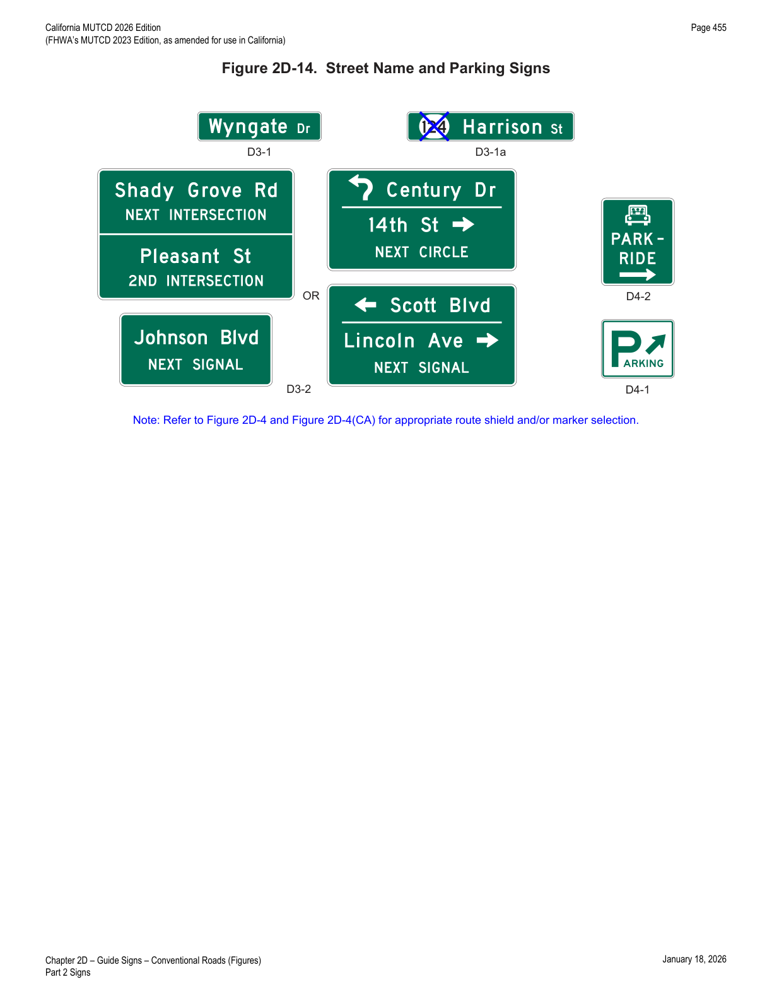
2D.49 Signing on Conventional Roads on Approaches to Interchanges
- 01Because a number of different ramp configurations are commonly used at interchanges with conventional roads, drivers cannot reliably predict whether they must turn left or right to enter the correct ramp toward their desired freeway/expressway direction. Consistently applied signing for conventional road approaches to freeway or expressway interchanges is highly desirable.
- 02On multi-lane conventional roads approaching an interchange, guide signs shall be provided identifying which direction of turn is to be made and/or which specific lane to use for ramp access to each direction of the freeway or expressway.
- 03Signing of single-lane conventional roads approaching an interchange should consist of a sequence (Figure 2D-15): (A) Junction Assembly; (B) Destination sign; (C) Directional Assembly or Entrance Direction sign for the first ramp; (D) Advance Route Turn Assembly or Advance Entrance Direction sign with an advance turn arrow; and (E) Directional Assembly or Entrance Direction sign for the second ramp.
- 04If used, the Entrance Direction sign shall consist of a white legend and border on a green background, containing the freeway/expressway route shield(s), cardinal direction, and directional arrow(s).
- 05The Entrance Direction sign may contain destination(s) and/or an action message such as NEXT RIGHT.
- 06At minor interchanges (Section 2E.30), a shorter sequence may be used (Figure 2D-15): (A) Junction Assembly; (B) Directional Assembly for the first ramp; and (C) Directional Assembly for the second ramp.
- 07On multi-lane conventional roads approaching an interchange, the sign sequence should include (Figures 2D-17 through 2D-19): (A) Junction Assembly; (B) Advance Entrance Direction sign(s) for both directions of travel on the freeway/expressway (if applicable); (C) Entrance Direction sign for the first ramp; (D) Advance Turn Assembly; and (E) Entrance Direction sign for the second ramp.
- 08Advance Entrance Direction signs are used to direct road users to the appropriate lane(s).
- 09The Advance Entrance Direction sign shall consist of a white legend and border on a green background, containing the freeway/expressway route shield(s) and cardinal direction(s).
- 10The Advance Entrance Direction sign may have destinations, directional arrows, and/or an action message (KEEP LEFT, NEXT LEFT, SECOND RIGHT); signs in this sequence may be mounted overhead to improve visibility, as shown in Figures 2D-17 through 2D-19.
- 11A post-mounted Advance Entrance Direction diagrammatic sign (Figure 2D-20) might be helpful in depicting the location of a freeway/expressway entrance ramp close to an intervening intersection on the same side of the approach roadway, where signing for only the ramp might confuse road users.
- 12If used, the post-mounted Advance Entrance Direction diagrammatic sign shall display only the two successive turns from the same side of the roadway (one being the entrance ramp) and shall not depict lane use with lane lines, multiple arrow shafts, action messages, or other representations.
- 13Example guide signing for a transposed-alignment crossroad at a diamond interchange is shown in Figure 2D-21; for a single-point urban intersection at a diamond interchange in Figure 2D-22.
- 14Section 2D.50 covers use of a Directional assembly or a FREEWAY ENTRANCE sign to mark the entrance to a freeway or expressway at the far corner of an intersection.
2D.50 Freeway Entrance Signs (D13-3 and D13-3a)
- 01FREEWAY ENTRANCE (D13-3) signs or FREEWAY ENTRANCE with diagonal downward-pointing arrow (D13-3a) signs may be used on entrance ramps near the crossroad to inform road users of the freeway/expressway entrance, as appropriate.
- 02The D13-3 and D13-3a signs may display an alternate legend in place of FREEWAY, such as EXPRESSWAY or PARKWAY, or may display the name of an unnumbered highway.
- 03A Directional assembly (Section 2D.32) with a diagonal downward-pointing arrow (M6-2aP) auxiliary plaque (Section 2D.28) may be used at the far left-hand corner of an intersection with a freeway/expressway entrance ramp as an alternative to the D13-3a sign, facing left-turning traffic to indicate the immediate entry point and distinguish the entrance ramp from an adjoining exit ramp terminal at the same intersection. A similar Directional assembly may be used at the far right-hand corner where an entrance ramp and a crossroad/side road follow one another in close succession and the entry point might otherwise be difficult to distinguish from the crossroad or side road.
- 03aA Freeway Entrance Package consists of a vertically arranged set of signs mounted on a single post: from top to bottom, the FREEWAY ENTRANCE (D13-3) sign, a Cardinal Direction auxiliary plaque, a Route shield, and a Directional Arrow auxiliary plaque at the bottom.
- 03bRefer to Figure 2B-15(CA) for typical layouts and placement guidance for the Freeway Entrance Package.
- 04Section 2B.48 covers use of regulatory signs to deter wrong-way movements at intersections of freeway/expressway ramps with conventional roads, and where entrance ramps intersect the mainline lanes.
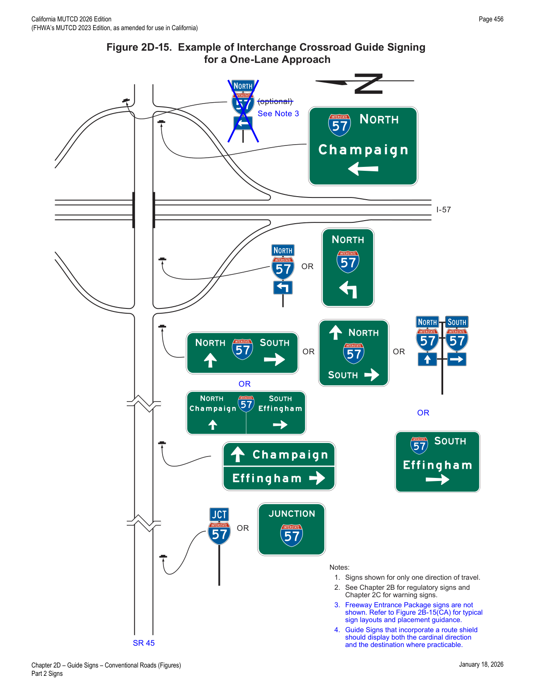
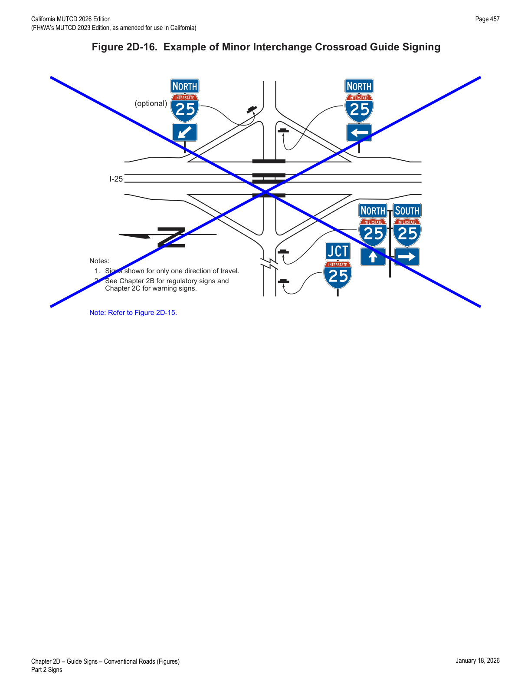
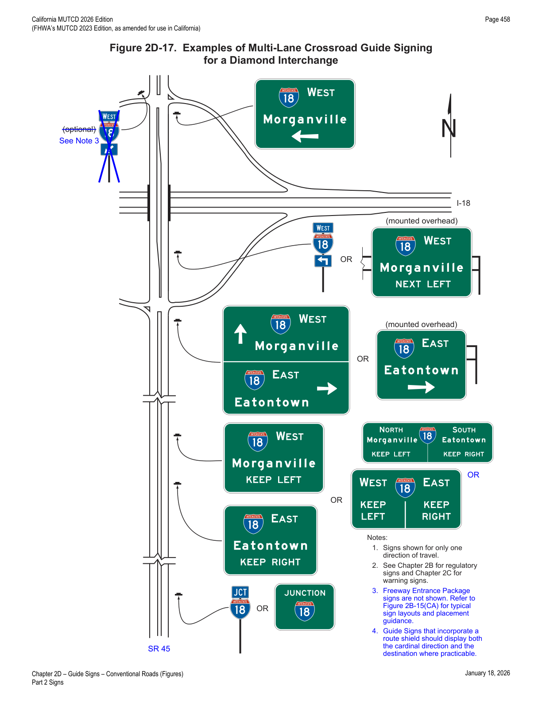
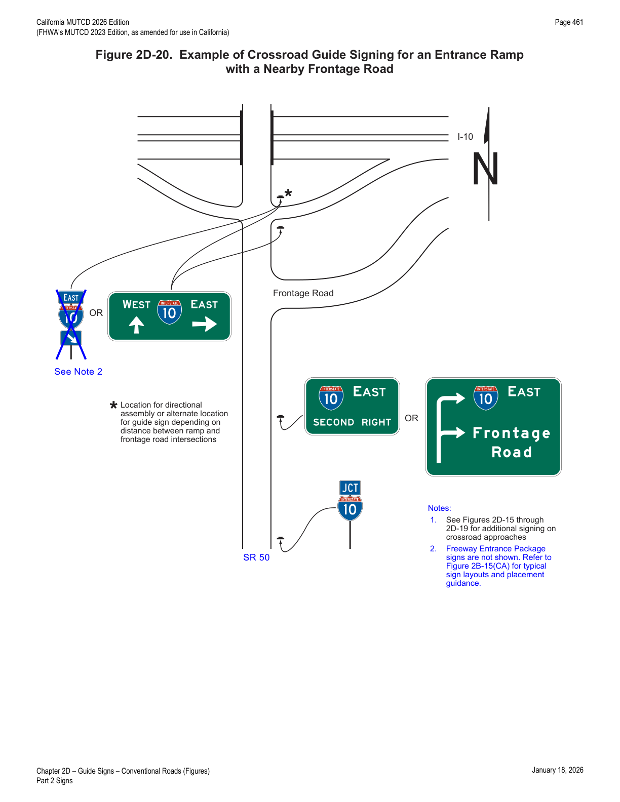
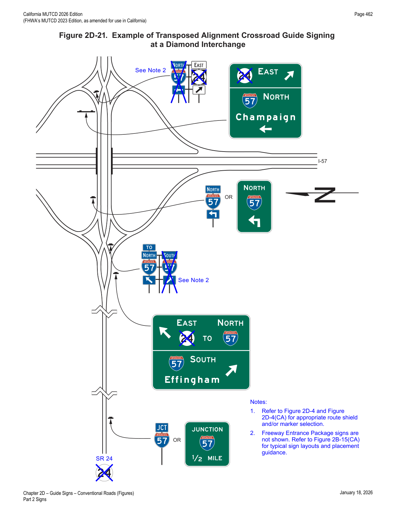
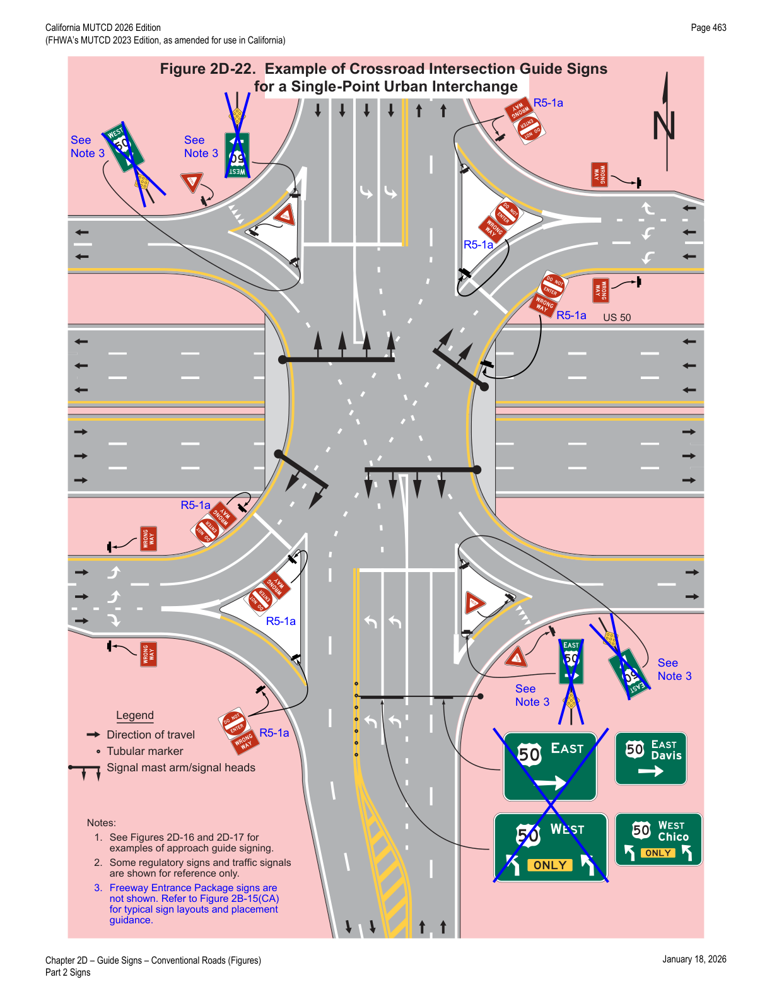
2D.51 WEIGH STATION Signing (D8 Series)
- 01Independent facilities or areas have been added along many highways where certain commercial vehicles are directed to stop to be weighed and/or inspected — sometimes permanent roadside areas, sometimes temporary mobile facilities.
- 02The general concept for signing permanent Weigh Stations is similar to signing Rest Areas (Section 2I.05), since traffic using either area remains within the right-of-way.
- 03The standard sequence of signs for a Weigh Station on a conventional highway shall include three basic signs (Figure 2D-23): (A) Weigh Station Advance (D8-1) sign; (B) Weigh Station Advance Direction (D8-2) sign; and (C) Weigh Station Entrance Direction (D8-3) sign.
- 04A Gore sign with the same basic legend as the D8-3 sign should also be used to emphasize the weigh station entrance.
- 07The D8-2 or D8-1 sign should display, either on the sign or on a supplemental plaque or sign panel, the changeable legend OPEN or CLOSED.
- 09The ALL TRUCKS – STOP AT SCALE (SR57-1(CA)) sign may be installed below the D8-2 sign to inform drivers that all trucks are required to stop at the weigh station.
- 10The NO PICKUPS (SR57-1P(CA)) plaque may be mounted below the SR57-1(CA) sign at identified problem locations to advise motorists that pickup trucks are prohibited from entering weigh stations.
- 11On State highways, an extinguishable message sign may be used in lieu of the OPEN/CLOSED supplemental plaque.
- 12The VEHICLE INSPECTION ONLY NO LOITERING OR CAMPING (S22-1(CA)) sign may be installed at problem locations within areas designated for brake checks or safety inspections at weigh stations.
2D.52 Crossover Signs (D13-1 and D13-2)
- 01Crossover signs may be installed on divided highways to identify median openings not otherwise identified by warning or other guide signs.
- 02A Crossover (D13-1) sign (Figure 2D-24) shall not be used to identify a median opening permitted only for official or authorized vehicles.
- 03If used, the Crossover sign should be installed immediately beyond the median opening, either on the right-hand side of the roadway or in the median.
- 04The Advance Crossover (D13-2) sign (Figure 2D-24) may be installed in advance of the Crossover sign to provide advance notice of the crossover.
- 05The distance displayed on the Advance Crossover sign should be 1 MILE, ½ MILE, or ¼ MILE, unless unusual conditions require some other distance; if used, the sign should be installed on the right-hand side of the roadway or in the median at approximately the distance displayed.
2D.53 Truck and Passing Lane Signs (D17-1 through D17-4)
- 01If an extra lane has been provided to the right of the travel lane for trucks and other slow-moving traffic, an Advance Truck Lane (D17-2) sign (Figure 2D-25) should be installed in advance of the lane.
- 02If a series of truck lanes is provided along a highway, a Next Truck Lane (D17-1) sign (Figure 2D-25) should be installed after each truck lane segment.
- 03If an extra lane has been provided to the left for passing slower-moving vehicles, an Advance Passing Lane Advance (D17-4) sign (Figure 2D-25) should be installed in advance of the lane.
- 04If a series of passing lanes are provided, a Next Passing Lane (D17-3) sign (Figure 2D-25) should be installed after each passing lane segment.
- 05An example of signing for a truck lane is shown in Figure 2D-26; an example for an intermittent passing lane is shown in Figure 2D-27.
- 06Section 2B.38 covers regulatory signs for these types of lanes.
- 07The DIVIDED ROAD (X MILES) AHEAD (G68(CA)) sign (Figure 2D-101(CA)) may be used to indicate the distance to the next section of divided highway.
- 08The mileage shown should be rounded to the nearest one-fourth mile for distances up to one mile, and to the nearest whole mile for distances over one mile.
- 09The G68(CA) sign is used on a two-lane highway in advance of a divided section to encourage passing within the upcoming divided segment.
2D.54 Emergency and Slow Vehicle Turn-Out Signs (D17-5 through D17-7)
- 01If an emergency turn-out area has been provided where a shoulder is not available for emergency stopping, or where there is part-time shoulder use by traffic (Section 2G.23), Emergency Turn-Out signs should be installed. The Advance Emergency Turn-Out Advance (D17-5) sign (Figure 2D-28) should be installed between ¼ mile and 500 feet in advance of the turn-out area; the Emergency Turn-Out Directional (D17-6) sign (Figure 2D-28) should be installed near the beginning of the turn-out area.
- 02If a slow vehicle turn-out area has been provided for slow-moving traffic, an Advance Slow Vehicle Turn-Out (D17-7) sign (Figure 2D-28) should be installed in advance of the turn-out area.
- 03An example of signing for an emergency turn-out is shown in Figure 2D-29.
- 04Section 2B.42 covers regulatory signs for slow vehicle turn-out areas.
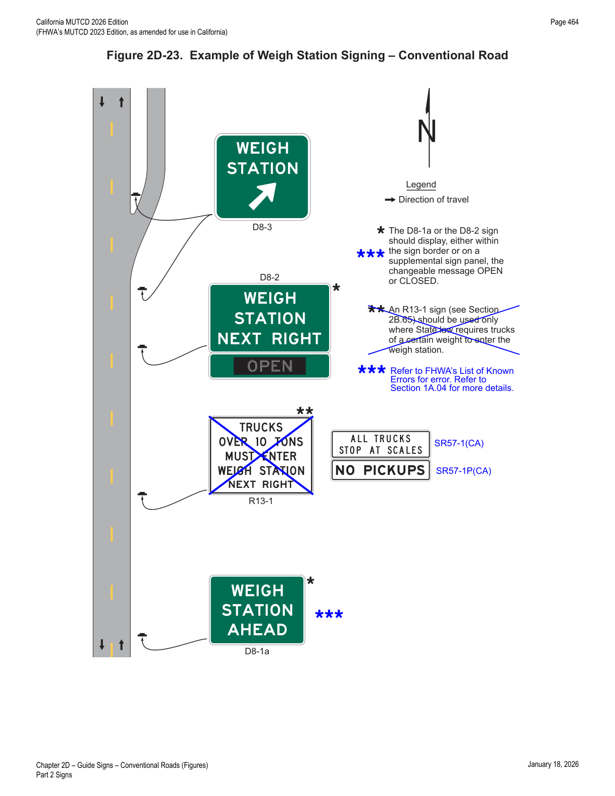
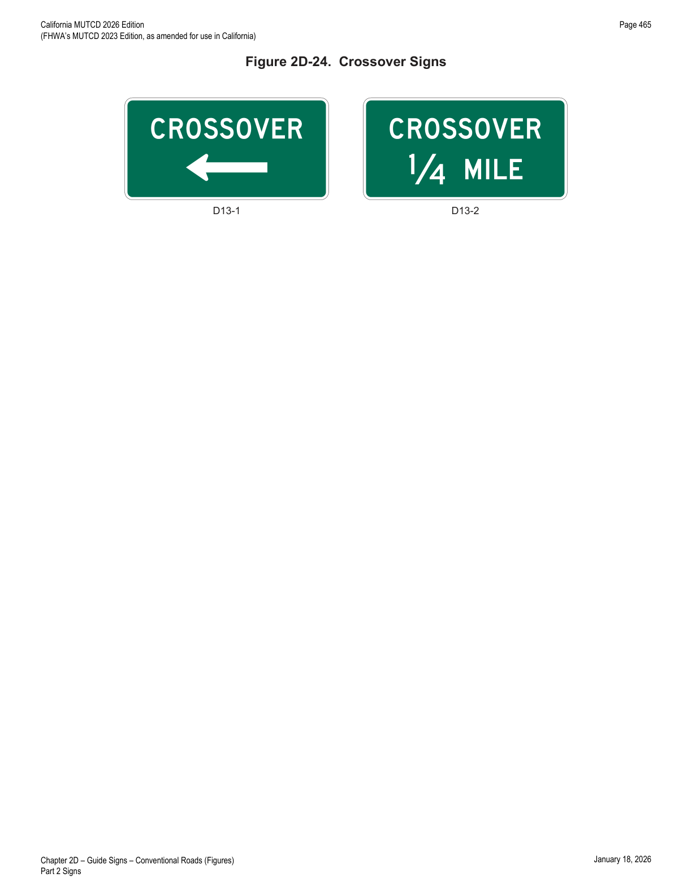
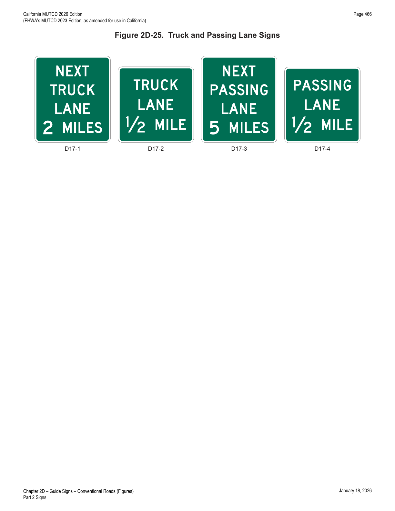
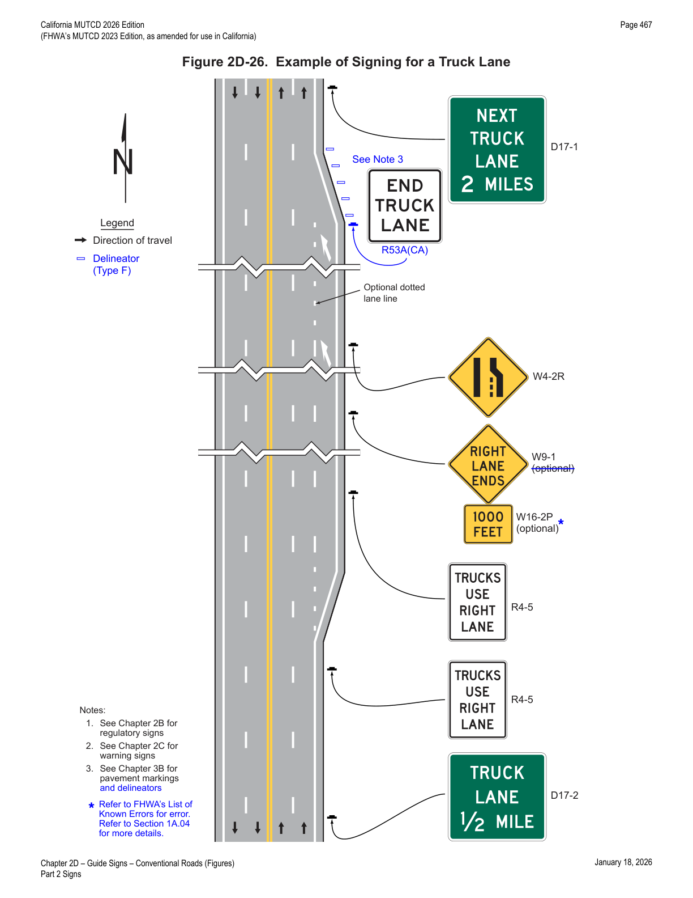
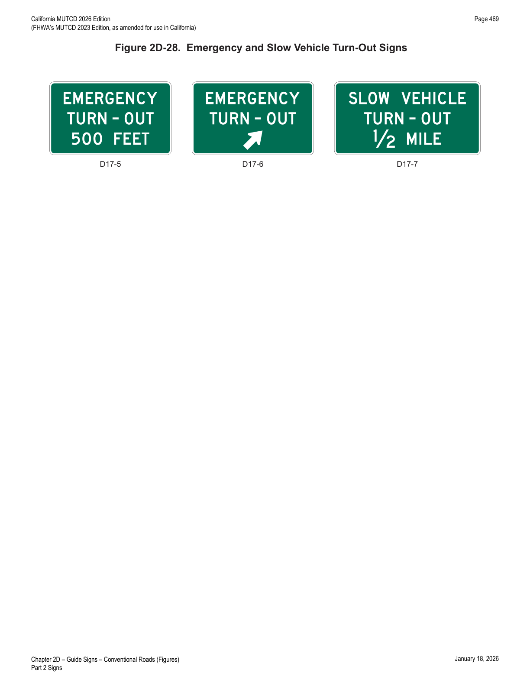
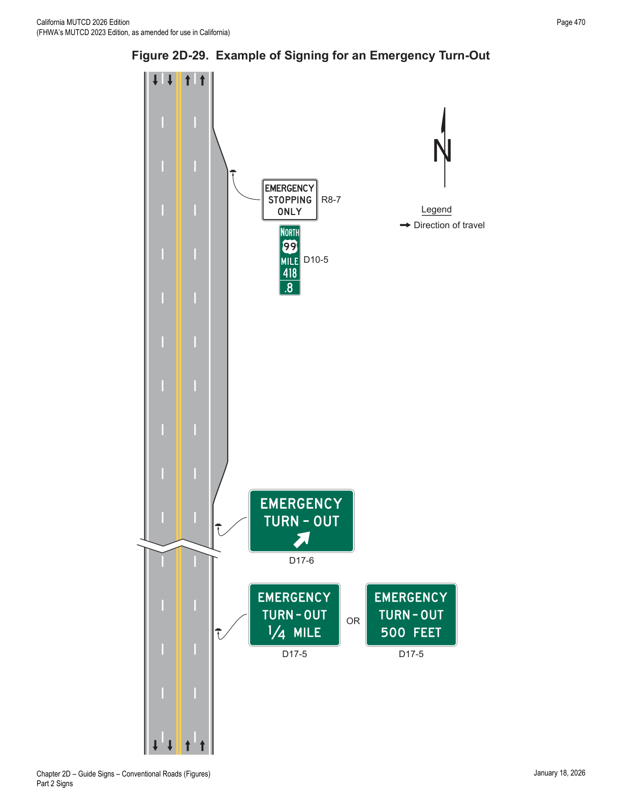
2D.55 Community Wayfinding Signs
- 01Community wayfinding guide signs are part of a coordinated and continuous system of signs directing tourists and other road users to key civic, cultural, visitor, and recreational attractions and other secondary destinations within a city or local urbanized/downtown area.
- 02They are a type of destination guide sign for conventional roads with a common color and/or identification marker for destinations within an overall wayfinding plan for an area.
- 03Figures 2D-30 through 2D-32 illustrate various examples of design and application.
- 04Use of community wayfinding guide signs shall be limited to conventional roads; they shall not be installed on freeway or expressway mainlines or ramps. Direction to community wayfinding destinations from a freeway or expressway shall be limited to a Supplemental guide sign (Section 2E.51) on the mainline and a Destination sign (Section 2D.36) on the ramp directing road users to the area(s) where community wayfinding signs are used; individual wayfinding destinations shall not be displayed on the Supplemental guide and Destination signs except where consistent with State or agency policy on Supplemental guide signs.
- 05Community wayfinding guide signs shall not be used to direct to primary destinations or highway routes/streets — Destination or other guide signs shall be used for that purpose and shall have priority over any community wayfinding sign in placement, prominence, and conspicuity.
- 06Because regulatory, warning, and other guide signs have higher priority, community wayfinding guide signs shall not be installed where adequate spacing cannot be provided from higher-priority signs, and shall not be installed where they would obscure the road user's view of other traffic control devices.
- 07Community wayfinding guide signs shall not be mounted overhead.
- 08If used, a community wayfinding sign system should be established at a local municipal or equivalent jurisdictional level, or for an urbanized area of adjoining municipalities forming an identifiable, cohesive geographic entity; it should not be used on a regional or statewide basis where infrequent or sparse placement would not read as a continuous, coordinated system. In such cases, Destination or other guide signs should instead direct road users to the identifiable area containing the eligible destination.
- 08aOn State highways, community wayfinding guide signs should be installed under an encroachment permit issued by Caltrans.
- 08bPlacement of community wayfinding guide signs shall be performed by the requesting jurisdiction or agency through the normal permit process, as a fee-exempt permit.
- 08cThese signs shall be installed in accordance with this Manual and Caltrans' Standard Plans.
- 08dCommunity wayfinding sign panels should be clearly marked to indicate ownership.
- 09When a system of community wayfinding guide signs is being considered, the existing guide sign system should be evaluated for applicability and general compliance with this Manual to ensure road user directional guidance is adequately addressed.
- 10The design provisions of this Section for vehicular community wayfinding sign legends do not apply to signs intended only to inform or direct pedestrians or other users of a sidewalk or roadside area.
- 11Because pedestrian wayfinding signs typically use smaller legends inadequate for vehicular viewing, and can provide direction to pedestrians that might conflict with vehicular direction, they should be located to minimize their conspicuity to vehicular traffic — as far from the street as practicable (e.g., the far edge of the sidewalk), or, where that is impracticable, using one or more of: (A) locating signs away from intersections with high-priority traffic control devices; (B) facing the pedestrian message toward the sidewalk and away from the street; or (C) cantilevering the sign over the sidewalk (if mounted at vehicular sign height) to remove it from the vehicular sign line of sight.
- 12To further minimize nighttime conspicuity to vehicular traffic, pedestrian wayfinding signs should not be retroreflective.
- 13Color coding is sometimes used on community wayfinding guide signs to help road users distinguish between multiple potentially confusing traffic generator destinations in different neighborhoods or subareas.
- 14At the boundaries of the geographical area within which community wayfinding signing is used, an informational guide sign may be posted informing road users of the wayfinding signing and identifying the meanings of the color codes or pictographs used.
- 15These informational guide signs shall have a white legend and border on a green background, a design similar to Figure 2D-1 and consistent with basic guide sign design principles, and shall not be installed on freeway or expressway mainlines or ramps.
- 16The color coding or a pictograph of the community wayfinding system's identification markers shall be included on the boundary informational guide sign, applying to a specific, identifiable neighborhood or geographical subarea; color coding/pictographs shall not distinguish between different destination types within the same subarea. Color coding shall use different colored square or rectangular panels on the sign face, positioned to the left of the neighborhood/area name; panel height shall not exceed 2 times the upper-case letter height of the principal legend.
- 17The colored panels may include a black or white letter, numeral, or designation (whichever provides better contrast) to identify the destination.
- 18Except for the boundary informational guide sign, community wayfinding guide signs may use background colors other than green to color-identify wayfinding destinations by geographical area, with or without the boundary sign's corresponding color-coding panels. Except as provided in Paragraph 19, other approved background colors (Section 2A.06) may also be used for community wayfinding color coding.
- 19The standard colors red, orange, yellow, purple (or their fluorescent versions), fluorescent yellow-green, and fluorescent pink shall not be used as background colors for community wayfinding guide signs, to minimize confusion with critical higher-priority regulatory/warning sign color meanings.
- 20The minimum contrast value of legend color to background color for community wayfinding guide signs shall be at least 0.70 (70%).
- 21All messages, borders, legends, backgrounds, and identification markers shall be retroreflective (Sections 2A.21, 2A.22).
- 22Community wayfinding guide signs, exclusive of any identification marker, shall be rectangular.
- 23Simplicity and uniformity in design, position, and application (Section 2A.04) are important and should be incorporated into the sign design and location plans.
- 24Community wayfinding guide signs should be limited to three destinations per sign (Section 2D.06).
- 25Abbreviations (Section 1D.08) should be kept to a minimum and limited to those commonly recognized.
- 26Horizontal lines contrasting with the sign background should be used to separate groups of destinations by direction.
- 27The basic requirement for all highway signs, including community wayfinding signs, is that they be legible to those for whom they are intended and understandable in time to permit a proper response; Section 2A.04 has more on effective sign design.
- 28Word messages should be as brief as practical, with lettering large enough for the necessary legibility distance.
- 29The minimum ratio of letter height to legibility distance shall comply with Section 2A.08; lettering for destination/directional legends shall comply with the minimum letter heights in Section 2D.05.
- 30Interline and edge spacing shall comply with Section 2D.05.
- 31Except as provided in Paragraph 34, the lettering style for destination/directional legends on community wayfinding guide signs shall comply with Section 2D.04.
- 32Lettering for destinations shall combine lower-case letters with initial upper-case letters (Section 2D.04); all other word messages shall be in all upper-case letters.
- 33Except as provided in Paragraphs 34 and 35, letters, numerals, and other characters should be composed of the Standard Alphabets detailed in the "Standard Highway Signs" publication.
- 34A lettering style other than the Standard Alphabets may be used on community wayfinding guide signs if an engineering study determines that its legibility and recognition values meet or exceed the Standard Alphabets for the same legend height and stroke width.
- 35If a lettering style other than the Standard Alphabets is used, it shall be conventional in form — not italic, oblique, script, highly decorative, or otherwise unusual.
- 36Except for signs designed and located to be viewed only by pedestrians, bicyclists stopped out of the flow of traffic, or occupants of parked vehicles, Internet and e-mail addresses (including domain names and URLs) and scanning graphics for obtaining information (Section 2A.04) shall not be displayed on any community wayfinding guide sign or sign assembly.
- 37Arrow location and destination priority order shall follow Sections 2D.08 and 2D.36; arrows shall be of the designs in Section 2D.08.
- 38Pictographs (Section 1C.02) may be used on community wayfinding guide signs.
- 39If a pictograph is used, its height shall not exceed 2 times the upper-case letter height of the principal legend.
- 40Except for pictographs, symbols not approved in this Manual for use on guide signs shall not be used on community wayfinding guide signs.
- 41Business logos, commercial graphics, or other forms of advertising (Section 1D.07) shall not be used on community wayfinding guide signs or sign assemblies.
- 42Other graphics that specifically identify the wayfinding system, including identification markers, may be used on the overall sign assembly and sign supports.
- 43An identification marker is a shape, color, and/or pictograph used as a visual identifier for the community wayfinding system for an area; Figure 2D-30 shows example identification marker designs.
- 44An identification marker may be used in a community wayfinding sign assembly, or incorporated into the overall design of a sign, to visually identify it as part of an overall wayfinding system.
- 45Identification markers shall be smaller in size and shape than the community wayfinding guide signs themselves, and shall not be designed to have an appearance that could be mistaken by road users for a traffic control device.
- 46The area of the identification marker should not exceed ⅕ of the area of the community wayfinding guide sign with which it is mounted in the same sign assembly.
2D.56 Signing of Named Highways for Mapping and Address Purposes
- 01A highway name is the officially designated name of a freeway, expressway, or conventional road for navigational, official mapping, and address purposes. Some highways are named in addition to or in lieu of a route number. Memorial, honorary, ceremonial, or other secondary names — such as touring route and byway names — are not considered highway names.
- 02Guide signs may contain street or highway names to enhance driver communication and guidance; however, they are considered supplemental information to route numbers.
- 03Highway names shall not replace official numeral designations.
- 04Memorial, honorary, or other secondary names (Section 2M.10) shall not appear on supplemental signs or on any other information sign on or along the highway or its intersecting routes.
- 05The use of route signs shall be restricted to signs officially used for guidance of traffic per this Manual and the AASHTO "Purpose and Policy" statement applicable to Interstate and U.S. numbered routes.
- 06Unnumbered routes having major importance to proper traffic guidance may be signed if carried out per the aforementioned policies; for unnumbered highways, a name to enhance route guidance may be used where applied consistently throughout its length.
- 07Only one name should be used to identify any highway, whether numbered or unnumbered.
- 08The Named State Highway (SG1(CA)) sign may be used to identify a named State highway when required by legislation or deemed necessary to provide traveler information.
2D.57 National Scenic Byways Sign and Plaque (M10-1 and M10-1aP)
- 01Certain roads have been designated by the U.S. Secretary of Transportation as National Scenic Byways or All-American Roads based on their archeological, cultural, historic, natural, recreational, or scenic qualities.
- 02State and local highway agencies may install the National Scenic Byways (M10-1) sign or (M10-1aP) plaque (Figure 2D-33) at entrance points to a recognized route. The M10-1 sign may be installed as independent Directional (Section 2D.32) or Confirming (Section 2D.33) assemblies at periodic intervals and near intersections where the route turns or follows a different numbered highway; the M10-1aP plaque may be installed below a route sign in a Confirming assembly. At developed roadside features (rest areas, historic sites, interpretive facilities, scenic overlooks), the sign/plaque may be placed on the associated sign assembly to inform travelers the site contributes to the byway experience.
- 03Where the byway is identified only by the National Scenic Byways sign, the Directional assembly should consist of the M10-1 sign and an M5 series or M6 series auxiliary plaque when a turn indication is necessary to remain on the byway route.
- 04Where the byway name is to be displayed along the route, it should be displayed in a Directional or Confirming assembly (Figure 2D-34) as: (A) a Byway Identification (M10-2aP) plaque (Section 2D.58) mounted below the M10-1 sign; or (B) a Byway Identification (M10-2) sign (Section 2D.58) with the M10-1aP plaque mounted below it.
- 05In either case, the size of the M10-1 sign, M10-1aP plaque, M10-2 sign, and M10-2aP plaque should be consistent with that specified for route signs (Section 2D.10) for the roadway classification.
- 06Where the byway name is displayed along the route per Paragraph 4, the byway Directional or Confirming assemblies should be located separately from any route Sign assemblies or Destination guide signs.
- 07When a National Scenic Byways sign is installed on a National Scenic Byway or All-American Road, the design shown for the M10-1 sign or M10-1aP plaque in Figure 2D-33 shall be used, limited to routes so designated by the U.S. Secretary of Transportation.
- 08If used, the M10-1 sign or M10-1aP plaque shall be placed such that the highway route signs have primary visibility for the road user.
- 09The M10-1 sign or M10-1aP plaque shall not be installed as sign panels on a guide sign or as part of a guide sign assembly.
2D.58 State-Designated Scenic Byway, Historic Trail, and Auto Tour Route Signs
- 01Signing for State-designated scenic byways, historic trails, and auto tour routes is similar in concept to National Scenic Byways signing (Section 2D.57).
- 02Named highways are officially designated and shown on official maps to provide route guidance (primarily on unnumbered highways) and property addresses; a highway designated as a trail, auto tour route, or byway is not considered a highway name for signing or navigation purposes (Section 2D.56 covers named highway signing).
- 03Section 1D.09 covers authority for placement of traffic control devices within the highway right-of-way.
- 04Route Sign assemblies and Destination guide signs should have priority in visibility and location over signing related to historic trails, auto tour routes, and byways.
- 05Identification signs for a State scenic byway may be installed along conventional roads designated as part of a State scenic byway system: a Byway Identification (M10-2) sign (Figure 2D-34) with the byway name may be installed in a Directional or Confirming assembly with the SCENIC BYWAY (M10-3bP) plaque (Figure 2D-34) mounted below it.
- 06Where a National Scenic Byway is part of a State scenic byway system, the National Scenic Byways (M10-1aP) plaque may be installed below the Byway Identification (M10-2) sign or State Scenic Byway (M10-3 or M10-3a) sign (Figure 2D-34) in a Directional or Confirming assembly.
- 07A State Scenic Byway System (M10-3) sign may be installed in a Directional or Confirming assembly with the byway name on a Byway Identification (M10-2aP) plaque below it (Figure 2D-34).
- 08A State Scenic Byway (M10-3a) sign with a simple graphic and the byway name may be installed in a Directional or Confirming assembly with the SCENIC BYWAY (M10-3bP) plaque mounted below it.
- 09Identification signs for a historic trail, such as National Historic Trails administered by the National Park Service, may be installed along segments of conventional roads coinciding with the trail's original route. National Historic Trail Identification (M11-1) signs (Figure 2D-34) may be installed in a Directional or Confirming assembly with a HISTORIC ROUTE (M11-1aP), CROSSING (M11-1bP), or AUTO TOUR ROUTE (M11-1cP) auxiliary plaque mounted below it. The beginning/end of a historic trail route or auto tour route may be indicated with a BEGIN (M4-14P) or END (M4-6P) auxiliary plaque with a white legend and border on a brown background mounted above the identification sign. Route length may be identified by a NEXT XX MILES (M11-1dP) plaque mounted below the M11-1aP or M11-1cP plaque.
- 10The design and size of historic trail and State scenic byway identification/system signs should comply with the general provisions and principles for route signs (Section 2D.10); designs should be simple, dignified, and devoid of complex graphics, and should not exceed the size of the route signs used along the route.
- 11Scenic byway, historic trail, and auto tour route sign designs shall not resemble a highway route sign.
- 12Where used, historic trail and State scenic byway identification signs should be installed as Directional (Section 2D.32) or Confirming (Section 2D.33) assemblies at independent locations, separate from other Route Sign assemblies and Destination guide signs; Confirming assemblies for the trail/byway should be installed at less frequent intervals than for the numbered route.
- 13Where all or part of a historic trail's original route does not follow a roadway, an auto tour route is sometimes established along a conventional road near the historical route (examples: the Lewis and Clark, Oregon, and Santa Fe National Historic Trails). The auto tour route is shown on touring maps along State or other highways and provides access to trail sites.
- 14A system of signing along conventional roads for a historic trail with an auto tour route is shown in Figure 2D-35; examples of Destination and Supplemental guide signs directing to historic trail sites from a freeway or expressway interchange are shown in Figure 2D-36.
- 15Signing for historic trails should be limited to Destination signs for trail-related sites and to Directional and Confirming assemblies for the original portions of the trail itself. If an auto tour route provides access to sites along the original trail, signing should be limited to Destination signs for those sites and directional signing to access the original trail route; identification signs for the auto tour route should not be installed, instead relying on the touring map and other directional signs for the highways the auto tour route follows.
- 16Identification signs for historic trails, auto tour routes, and scenic byways shall not be installed on freeways or expressways, except as necessary for continuity between discontinuous conventional-road segments of a designated trail/route/byway for which the freeway or expressway provides the only connection; if so installed, they shall be independent trailblazer assemblies (Sections 2D.34, 2E.55), not combined with other route signs or Confirming assemblies or on guide signs, and installed at less frequent intervals than Confirming assemblies for the highway route.
- 17Identification signs for historic trails, auto tour routes, and scenic byways shall not be installed as sign panels on a guide sign or as part of a guide sign assembly.
- 18A scenic route is an officially designated portion of the State Highway System traversing areas of outstanding scenic beauty that, together with adjacent scenic corridors, requires special scenic conservation treatment (SHC §§ 260–263.8).
- 19The Scenic Route (G30(CA)) sign shall be used to identify routes designated as official State Scenic Highways, installed on the right side of the roadway at the beginning of the scenic route.
- 20The Scenic Route (G30aP(CA)) plaque for State routes and G30bP(CA) plaque for county routes, when used, should be placed below and on the same post as the Route shield signs.
- 21The BEGIN (M4-14P) plaque may be mounted above the G30(CA) sign at the beginning of the scenic route; the END (M4-6P) plaque may similarly be mounted above the G30(CA) sign at the end of the scenic route.
- 22Refer to Figure 2D-101(CA) for the Scenic Route sign and associated plaques.
2D.59 Emergency Routing Signs and Plaques (M4-11 and M4-12 Series)
- 01As part of an agency's transportation incident management plan, it is sometimes desirable to permanently sign routes providing rerouting around highway segments susceptible to traffic incidents. Permanently installed Emergency Routing signs and plaques (Figure 2D-37) provide direction on conventional roads from an exit upstream of an incident-susceptible area back to the original route downstream of that area.
- 02EMERGENCY ROUTE (M4-11 and M4-11a) signs and EMERGENCY ROUTE TO (M4-11bP and M4-11cP) plaques mounted on a directional assembly may be permanently installed on conventional roadways to provide trailblazing along a designated diversionary route to bypass a traffic incident.
- 03The purpose of Emergency Routing signs and plaques is corridor management along routes with recurring incidents and reasonable rerouting paths; they are intended to be permanently installed to provide instant rerouting guidance when congestion or backups first begin, even before emergency responders can provide temporary traffic control. They can be used as a stand-alone system or as part of a larger system incorporating other devices such as changeable message signs, and provide road users assurance that a diversionary route leads back to their original route.
- 04Emergency Routing signs and plaques shall only be installed at departure points and along diversion routes for directing road users around susceptible highway segments (Figure 2D-38). EMERGENCY ROUTE and EMERGENCY ROUTE TO signs shall be placed at each turning decision point along the designated route until it rejoins the original route, or until other directional signs leading back to the original route are provided.
- 05Emergency Routing signs shall have a white legend and border on a green background.
- 06For additional emphasis, the legend EMERGENCY ROUTE or EMERGENCY ROUTE TO may be displayed in a yellow panel with black letters near the top of the sign (Figure 2D-37).
- 07Orange or pink shall not be used as alternate colors on permanently installed signs or plaques for rerouting traffic during an incident or other event. If a route shield is displayed as part of the message, the wording shall be EMERGENCY ROUTE TO as shown in Figure 2D-37.
- 08An EMERGENCY ROUTE TO plaque with either a white legend/border on green (M4-11bP) or black legend/border on yellow (M4-11cP) may be added to the top of a conventional Route assembly on a diversion route to provide direction back to the original route downstream of the incident (Figures 2D-37, 2D-38).
- 09A combination warning and regulatory message sign with flashing beacons mounted above, reading WHEN FLASHING [ROUTE] CLOSED AHEAD / USE EMERGENCY ROUTE [NEXT RIGHT or EXIT XX], may be used in advance of the emergency route entrance to inform road users of the closure and require exiting the primary route to use the emergency route (Figures 2D-37, 2D-38).
- 10The End Emergency Route (M4-12) sign may be used along the emergency route just prior to the junction where traffic re-enters the primary route past the closed section (Figures 2D-37, 2D-38).
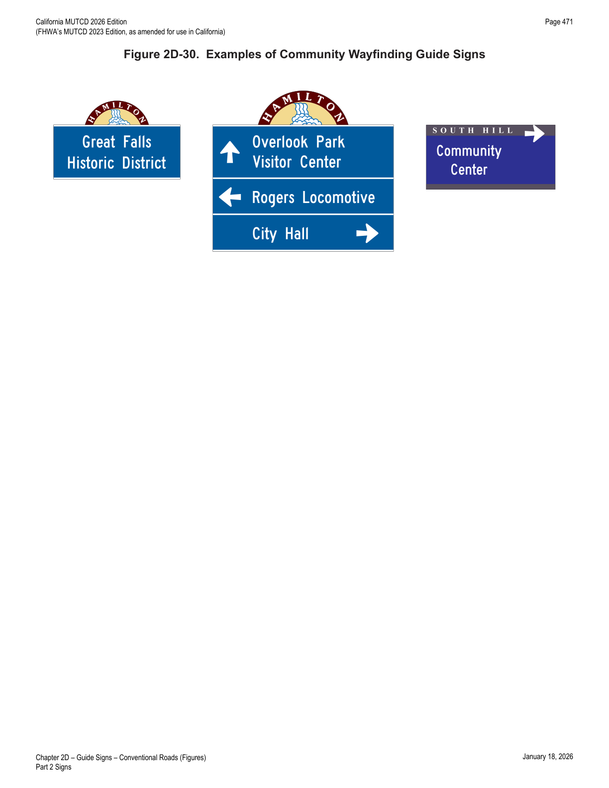
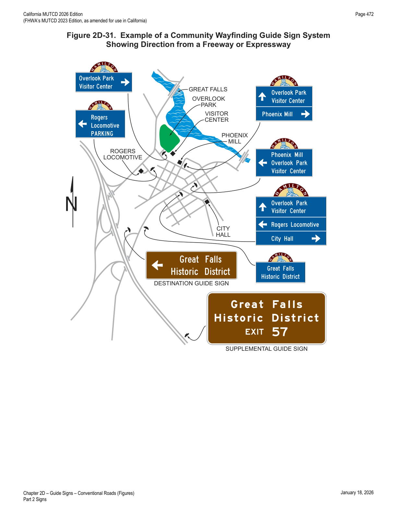
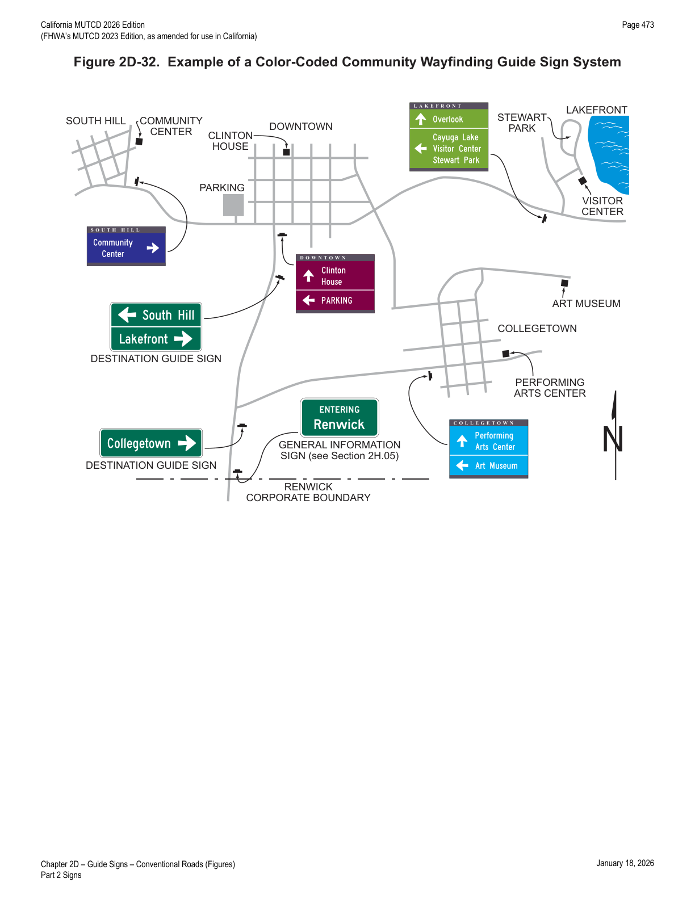
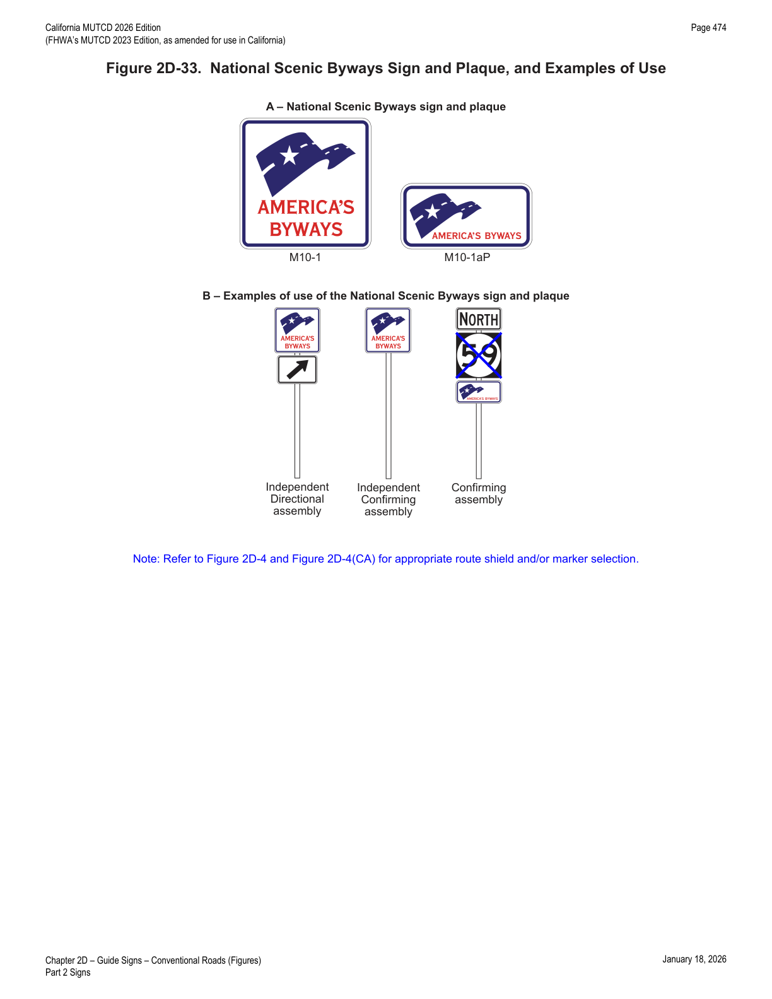
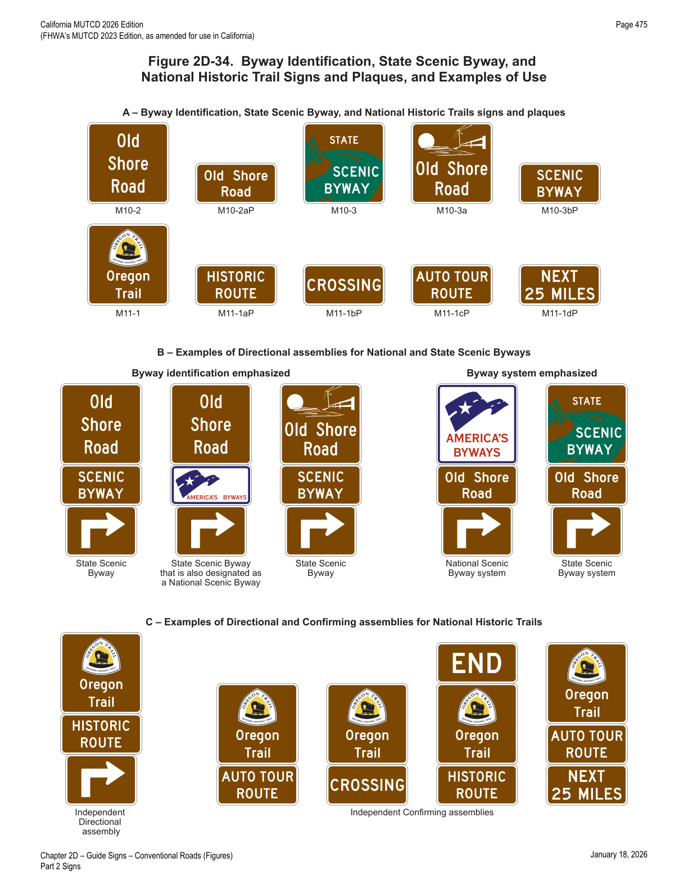
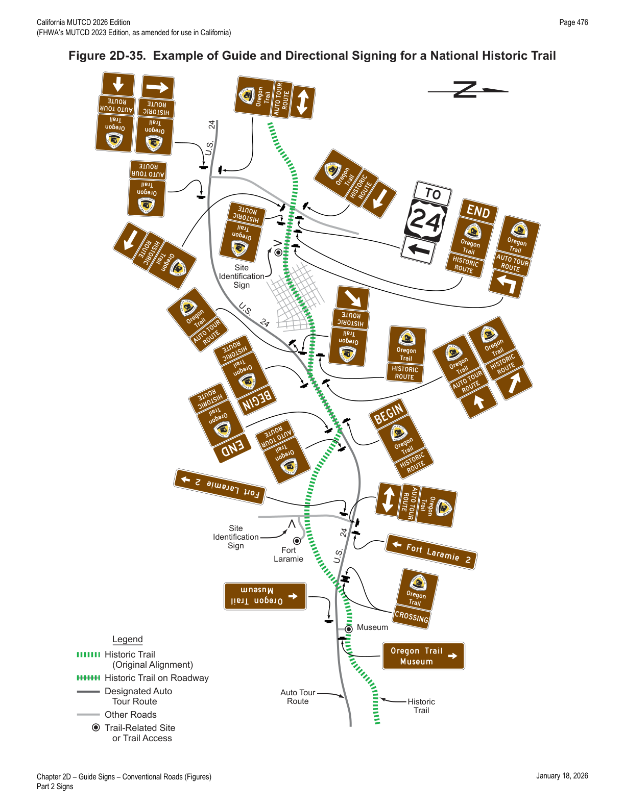
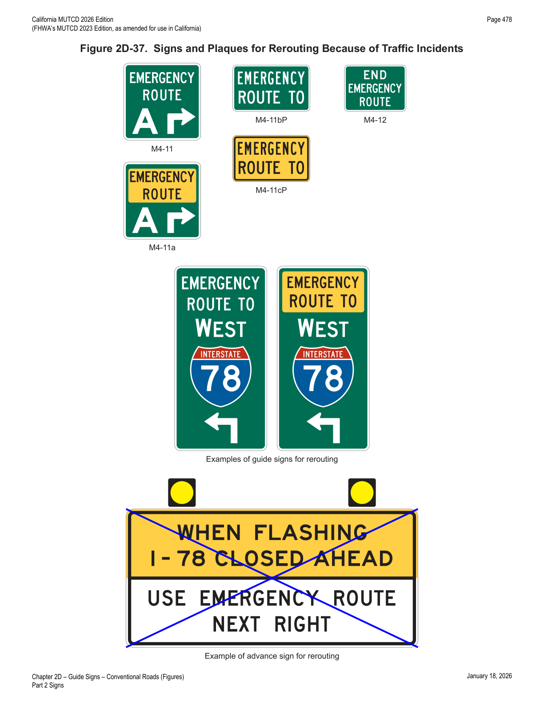
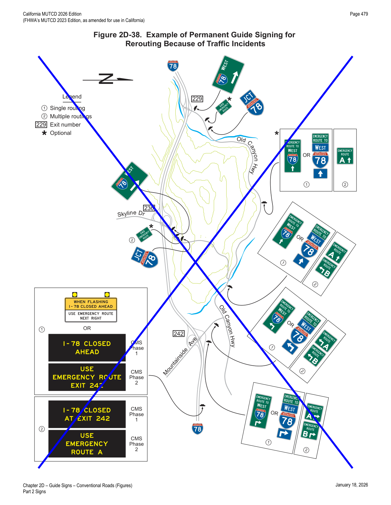
2D.60 Signing at Airports
- 01Many roadways within airport facilities (including terminal curbside roadways) are considered conventional roads because they typically have frequent driveways and at-grade intersections and might have pedestrian activity along and/or across them.
- 02Some airport roadways have full or partial control of access and operating speeds higher than 45 mph and are thus classified as freeways or expressways for signing purposes (Chapter 2E) — typically on approaches to the airport from other highways, on approaches to terminal/parking/patron facility access points, and on roadways providing exits to the local or regional highway network.
- 02aRequirements for Exit Gore signs and Exit Number plaques on State highways are in Sections 2E.22, 2E.23, 2E.25, 2E.26, and 2M.09.
- 03Roadways within airports and other similarly contained networks with multiple closely spaced access points to multiple destinations (terminals, parking, rental cars, other airport services) often present guide-signing challenges — closely spaced signs, excessive co-located or successive sign messaging, and the resulting informational load are of particular concern. The Transportation Research Board's Airport Cooperative Research Program Report 52, "Wayfinding and Signing Guidelines for Airport Terminal and Landside," has additional information.
- 04An example of major guide signing on the approaches to and within an airport facility roadway network is shown in Figure 2D-39.
- 05If adequate sign spacing cannot be provided due to site and roadway characteristics, measures should be taken to reduce vehicle speeds to give road users adequate time to comprehend and respond to sign messages; consider increasing sign letter heights for greater viewing distances and decision times. Where a single terminal serves a large number of airlines, airline information should be displayed on separate signs appearing in sequence to limit the number of airlines displayed at a single location. Changeable message signs (Chapter 2L) should not be used to rotate the display of airlines to an approaching road user.
In practice: various methods can reduce vehicle speeds at these locations — roadway geometric changes, traffic calming, and increased enforcement — with speed limit provisions found in Section 2B.21.
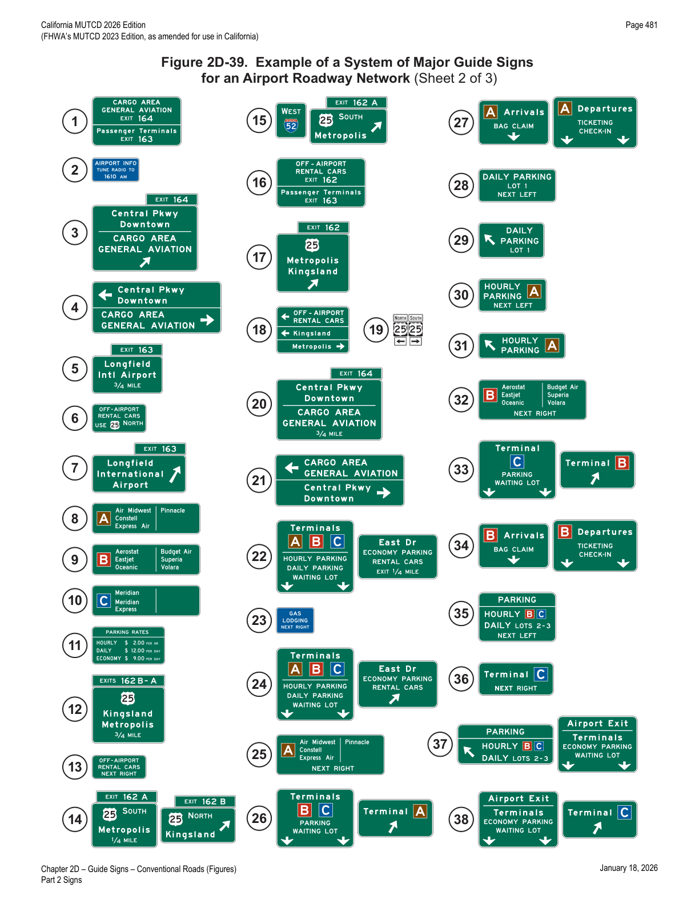
2D.101(CA) Intersection Number (G98A(CA)) Sign
- 01The Intersection Number (G98A(CA)) sign (Figure 2D-101(CA)) may be installed on any section of a highway route to number an intersection, assisting road users in estimating their progress and identifying specific locations along the highway.
- 02Intersection numbering may follow either a reference location numbering or consecutive numbering system.
- 03Reference location numbering is preferred over consecutive numbering for two reasons: (A) if new intersections are added to the route, highway agencies do not need to revise the existing numbering sequence; and (B) reference location numbering helps road users estimate destination distances and travel mileage more effectively.
- 04The G98A(CA) signs provide a simple and effective method for tourists to navigate safely and efficiently along a highway route with a high concentration of tourist destinations directly on or near the route.
- 05If used, the G98A(CA) signs should be ground-mounted or mounted on traffic signal poles at signalized intersections.
- 06The G98A(CA) signs shall not be installed on a highway unless the intersection numbers are published in a tourist map.
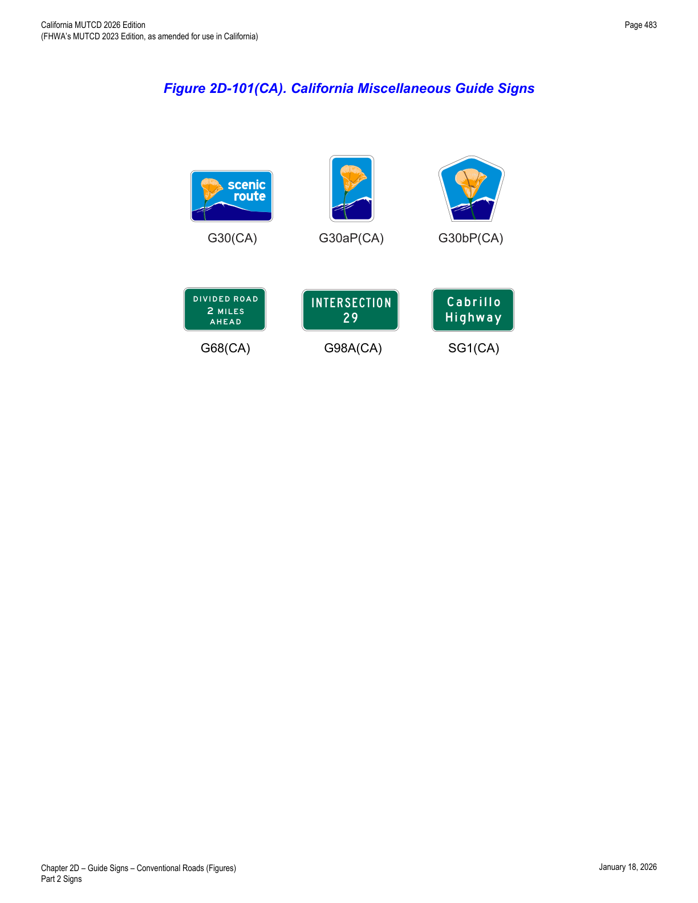
| Type of Destination | Specific Criteria | Major Metro | Urbanized | Rural |
|---|---|---|---|---|
| Post-Secondary School | Min. enrollment (single campus) | 1,000 | 1,000 | 1,000 |
| Post-Secondary School | Max. miles from a freeway | 2 | 4 | 5 |
| State Special School | Max. miles from highway | 5 | 5 | 5 |
| Zoo, Stadium, or Sports Arena | Min. annual attendance (public/non-profit) | 1,000,000 | 500,000 | 200,000 |
| Zoo, Stadium, or Sports Arena | Max. miles from highway | 2 | 2 | 3 |
| Museum | Min. annual attendance (public/non-profit) | 50,000 | 50,000 | 50,000 |
| Museum | Max. miles from highway | 5 | 5 | 5 |
| Convention Center | Min. annual attendance (public/non-profit) | 500,000 | 250,000 | — |
| Convention Center | Max. miles from highway | 3 | — | — |
| National Guard Armory | Only emergency center in area; easy access to primary evacuation route | — | — | — |
| Fairgrounds | Publicly owned/operated; temporary sign unless year-round activity; min. annual attendance | 500,000 | 200,000 | 200,000 |
| Fairgrounds | Max. miles from highway | 2 | 4 | 5 |
| Federal/State Hospitals, Prisons, National Cemeteries, Veteran Homes | Max. miles from highway | 1 | 3 | 5 |
| Government Centers | Number of employees | 5,000 | 2,000 | 1,000 |
| Government Centers | Max. miles from highway | 2 | 3 | 2 |
| California Welcome Centers | Easy access from nearest State highway | — | — | — |
| Airports | Max. miles from highway | 1 | 3 | 5 |
| Rail and Light Rail Stations | Easy access from nearest State highway | — | — | — |
Notes (selected): meeting the criteria does not guarantee sign placement — spacing limits (Sections 2A.08, 2D.05, 2D.42) and message-count limits still apply, and eligible destinations must qualify for signing based on traffic service. Any required follow-up signing must be installed by local agencies before signs are placed on the State highway. If a stadium is on a school campus for which signs already exist, a separate stadium sign will not be installed. Area classifications: Major Metropolitan Area = urbanized area with density ≥1,000/mi², total population ≥1,000,000, and a central city of ≥250,000; Urbanized Area = total population ≥50,000 with a central city of any size; Rural Area = all areas outside an urbanized area. A postsecondary institution must have 1,000+ full-time-equivalent students (CVC § 21375). School signs are not installed until private funding covers fabrication and installation; a relocated school with prior signs deemed to improve the school (per Caltrans) gets signs at the new location at no cost. Caltrans bills the Welcome Center directly for State highway sign fabrication/installation; local-road installation costs are the responsibility of the Welcome Center and relevant local agency.
★ Key Takeaways — Chapter 2D
- Conventional road guide signs default to a white message/border on green background; principal legend is at least 6-inch upper-case (or 6-inch upper-case / 4.5-inch lower-case nominal loop height) post-mounted, dropping to 4-inch on low-speed (≤25 mph) roads — always combining lower-case with initial upper-case letters for place/street/highway names, but all-upper-case for other word legends.
- Route sign precedence is fixed by law and practice: Interstate, then U.S., then State, then county, with the highest-priority route at the top/left of an assembly — and California does not use the generic federal M1-5 State Route shield at all, substituting its own G28-1(CA) shield and G28-2(CA) marker.
- The five sign-assembly types (Route Sign, Junction, Advance Route Turn, Directional, Confirming/Reassurance) each have a defined composition and placement window (e.g., Junction assemblies ≥400 feet in advance in rural areas, Confirming assemblies 25–200 feet beyond the intersected highway) — Trailblazer assemblies are a related but distinct sixth type using the word TO.
- Destination signs cap at three names (four only when the matching Advance/Supplemental guide signs also show four), with the nearer destination always listed above the farther one in the same direction, and no signs at all permitted for privately owned, profit-making enterprises or shopping centers on California highways.
- Community wayfinding guide signs are a strictly bounded category: conventional roads only, never overhead, never on freeway/expressway mainlines or ramps, capped at three destinations, barred from red/orange/yellow/purple/fluorescent-pink backgrounds, and always subordinate in priority, placement, and conspicuity to regulatory, warning, and primary destination/route guide signs.
- California's Table 2D-101(CA) imposes concrete, quantitative eligibility thresholds (minimum attendance/enrollment/employee counts and maximum distance from the highway, varying by Major Metropolitan/Urbanized/Rural area classification) before any supplemental destination sign — zoo, museum, convention center, government center, airport, etc. — may be installed on a State highway.